第３０回起業家・投資家・専門家お見合い交流会（平成２８年６月２２日）
講演
『僕はミドリムシで世界を救うことに決めました。』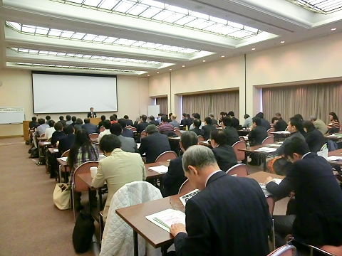 講師 出雲充氏（株式会社ユーグレナ 代表取締役社長）
＜内容＞
今回お話ししたいことは,「ひとつのことで起業する出会いについて」,「ミドリムシを社会認知させる」「起業・投資・専門家により地域活性化を」です。
大学１年にバングラデシュを訪れて,栄養失調の子供を目のあたりにして,世界で約１０億人いる栄養失調の子供たちを救いたいことが起業するきっかけとなった。帰国後,勉強していくうちに動物と植物の両方の特徴を持つ「ミドリムシ」が,栄養問題を解決出来るものと考え,大量に安定的に培養・供給する技術の研究を続け学生ベンチャーとして創業した。
創業していく上で,２つの大きな課題を解決する必要があった。「ミドリムシ」と聞いて,虫の一種と誤認されていることを栄養価の高い藻類であることを認知させたい。ミドリムシを大量に培養するにあたり雑菌もミドリムシを食べるため難しさがあった。雑菌を防止することは無理だと判断して,ミドリムシ以外は毒となる培養液を発見して解決した。
2050年には,人口が100億人となり食糧問題が予測される。これを解決するにはミドリムシで世界を救うものだと確信した。
バイオ燃料としてトウモロコシ農家は,本来食糧用から燃料用として出荷し潤っている反面食糧問題に拍車をかけている。ミドリムシ燃料は,農地を奪うことはしないで,砂漠や海洋など農地として適さないところで作ることを提案している。
２００6年１月ミドリムシ・ビジネスで株式会社ユーグレナを創業した。創業当時は「ミドリムシの採用実績はどうなっているの?」「他社がもし採用したらまた来てください」と各社を回っても相手にしてもらえなかった。最初から、上手くいくとは思ってなかったが100社プレゼンしたら、1社ぐらいは買ってくれると思っていたが,２年で５００社まわっても結果はゼロだった。
3人で1,000万円出し合って起業したものの,毎月の人件費が40万円(給料は出雲さん10万円、残り2人が15万円)。2年間で資金も尽き廃業を考えていた２００８年５月,伊藤忠商事からオファーがあった。出雲さんは他社と同様に採用実績がないので購入しないものと思っていた。ところが,伊藤忠商事からは「ミドリムシは聞いたことがない。他社が手を付けないことがビジネスチャンスだ。」と回答があり,ビジネス・パートナーとして開発をすすめた。
伊藤忠商事が話をすると,どこも話を聞いてくれ購入もしてもらった。だんだんビジネス・パートナーも日立,いすゞ,ファミリー・マート,デンソーと増えていった。
２０１４年１２月３日、東証一部に上場することができた。9年間で社員は3人から１９０人になった。資産価値も１２００億円になった。
広島の地でもベンチャーを育成してもらいたい。是非,投資家や専門家は若者や学生に育成,支援をお願いする。
「わたしは広島県の○○の分野で一番」となるようになること。富士山の次に高い山は北岳,琵琶湖の次に広い湖は霞が浦であるが,知名度はない。一番になることに価値があり二番では存在しないのと同じ。
試行回数×科学技術で奇跡的なイノベーションが生まれる。たとえ成功率が１％であったとしても、１００回挑戦したら６３．４％、４５９回挑戦したら、９９％成功する。
２０１５年第一回日本ベンチャー大賞「内閣総理大臣賞」を受賞した。
２０１５年１２月より「国産バイオ燃料計画」を横浜市や全日空などとスタートさせた。２０２０年には必ず実用化をさせて飛行機の機長アナウンスで「当機はミドリムシの国産バイオ燃料で飛行しています。」と必ず言わせます。広島からもベンチャーがどんどん育っていくことを期待します。
[Ｑ＆Ａ]
Ｑ：最初から５００回挑戦したら成功すると思っていたのか？
Ａ：知らなかった。知っていたら気が遠くなり大変でベンチャー起業はしていなかったと思う。モチベーションを高めて続け
たことで成功したと思う。
広島の投資家，専門の方々ひな鳥を気持ちが折れないよう温かく見守り支援をお願いします。
Ｑ：バイオ燃料の開発状況は，富士山でいうと何合目あたりか？
Ａ：富士山でいうと６から７合目である。大学での開発では技術的には出来上がっているが，設備が小さいため量を生産でき
ない。ビジネスに乗せるにはどうしても政府や企業の支援が不可欠である。
発表企業
■株式会社ソアラサービス（広島） 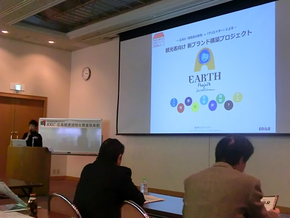 代表取締役社長：牛来千鶴
『－広島の「製造業の連携」×「クリエイター」による－観光客向け新ブランド構築プロジェクト』
＜内容＞
弊社はこれまで食品をメインに広島の特産品の商品企画を行ってきたが、今回は広島の製造業全体と提携し、新たな商品企画をしていく。ブランド名は「EARTH」、広島発世界へ広がる、世界とつながるブランドにしていきたい。3年で30社、5年で100社、50億円の売上を目標としている。業務提携や資金面での支援を求める。
■アボンコーポレーション株式会社（山口）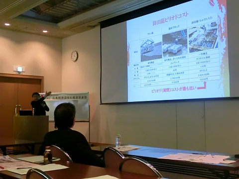 代表取締役社長：松村憲吾
『昔からある素材だからあんしん、環境に配慮した鋳鉄製品』
＜内容＞
鋳田籠の製造販売を行っている。鋳鉄技術は江戸時代末期からあり、環境に優しく、安全な素材で、100年以上の耐久性がある。鋳鉄技術をもっと多くの人に知ってもらい、鋳鉄業界を盛り上げたいと思い、一般社団法人を作った。土木関係の方で、川底や堤防に設置する際にはぜひとも活用していただきたい。
■株式会社Andeco（大阪）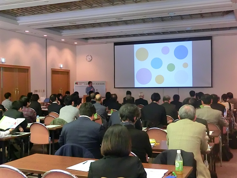 代表取締役社長：早川慶朗
『小商い、スモールビジネスを育む移動販売プラットフォーム』
＜内容＞
大企業の系列店や画一的な構造の街並みの隙間を狙うビジネス。スマートフォンが主流の中で、ライヴやマルシェなど、外に出て実際に見る、体験するニーズも増えているので、このスモールビジネスをシステム化していきたい。開発資金の支援とともに、場所を提供していただける不動産会社や公共施設を求める。
■株式会社The 10th Floor（東京）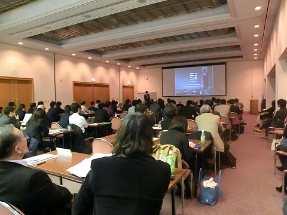 代表取締役社長：アーリフ ムタズ
『日本を元気にするアラブ人たち』
＜内容＞
ブランディング、デザイン、モノづくり等により、湾岸国と日本の懸け橋と
なる。現地法人設立のお手伝いや、輸出、インバウンドなどを、アラビア語専門
チームを作り、包括的にサポートする。湾岸国の人々にとって日本の認知度はまだまだ低いので、もっと日本をPRし、湾岸国から日本への観光誘致などもやっていきたい。
第２８回起業家・投資家・専門家お見合い交流会（平成２７年１０月１７日）
講演
『若手とシニアの融合。60社の顧問を務めるシニアベンチャーが語る「なぜ新規事業が起こせるのか」』
講師 森部好樹氏（有限会社ロッキングホース 代表取締役）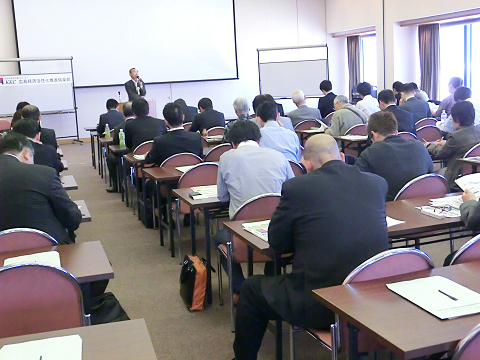 ＜内容＞
当社は、ソリューション、つまり販売力のコンサルティングに力を入れ、活
動している。というのも、事業を起こすにあたり、売れるかどうかが最大の
ポイントだからである。固定概念を捨て、与えられた環境のすべてをメリッ
トに変えるポジティブシンキングと逆転の発想が成功のカギ。そのためには、
私もフェイスブックや紹介で依頼の連絡がくるように、とにかく様々な手段
やツテを使ってアライアンスを組むことが大切である。これからも若者を中
心に日本を盛り上げていくお助けをできたらと思う。
発表企業
■一般社団法人人生安心サポートセンターきらり（広島） 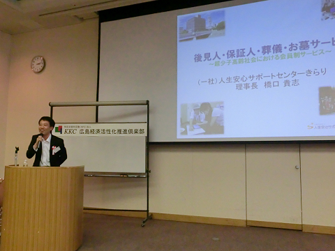 理事長：橋口貴志
『後見人・保証人・葬儀・お墓サービス～超少子高齢社会における
会員制サービス～』
＜内容＞
司法書士として成年後後見人の案件を多く扱う中で、万が一の場合にいろん
な方に迷惑をかけたくないというお客様からの声をもとに、個人ではなく団
体としてお客様の「生き活」を包括的にきちんとサポートしてあげたいと思
い、本法人を立ち上げた。これからはきらり会員の住居建設や県外進出を考
えているので、ボランティアやご寄付いただけるとありがたい。
■ためま合同会社（広島） 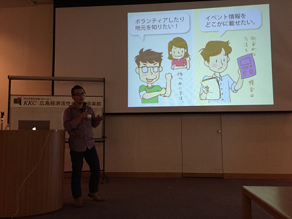 代表社員：清水義弘
『地域情報共有アプリ「ためまっぷ」の開発・提供』
＜内容＞
地域密着の情報発信アプリ。情報発信者は無料で、写真と日時、場所、ジャ
ンルをアップするだけ、営利イベントも掲載できる。ビジネスモデルとして
は広告収入で、地域を限定して広告掲載できる仕組みを考えている。新しい
メディアとして高評価をいただき、クラウドファンディングなどでも出資し
ていただいているが、さらなるシステム開発・構築のため支援を求める。
■株式会社ジブンノオト（山口）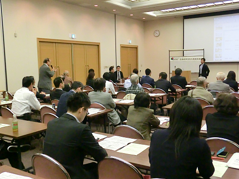 代表取締役：大野圭司
『島が教育の最先端～小中高生向けキャリア教育ビジネス～』
＜内容＞
中学3年の時に島おこしを夢見て、周防大島で、教育委員会や旅行会社と提
携し、起業家教育や研修、修学旅行マネジメントを行っている。起業家教育
では、ケーススタディから計画と目標設定、出店、利益分配と一連の流れを
学ぶ。起業家教育で日本の未来は変えられると信じている。将来的には学校
をつくりたい。業務提携等ご支援いただきたい。
■株式会社TTJ（広島） ※過去発表企業の経過報告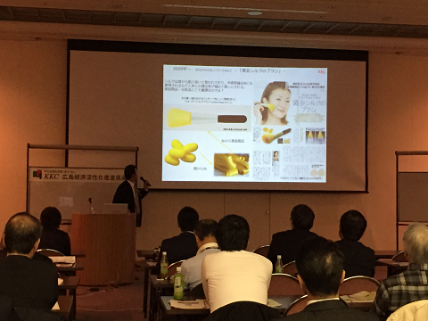 代表取締役：長谷川和博
『ゴールデンシルクビジネスから化粧品事業へ』
＜内容＞
貿易に関する資格を取り、その後講師をしていたが自分でも貿易できるので
はないかと思い、起業に至った。日本にない商品を販売するという面白さや
ロマンがある一方で、海外展開ならではの失敗もあり、たくさんのことを学
んだ。シルクに関する知識をさらに突きつめ、市場ニーズをとらえた商品展
開をしていきたい。。
第２９回起業家・投資家・専門家お見合い交流会（平成２８年２月２０日）
講演
『「今、そこにあるチャンス。」－未熟な経営者の体験的経営論－』 講師 細川匡氏（デリカウイング株式会社 代表取締役会長兼社長））
＜内容＞
私はつねに自分のことを未熟者だと思っている。それは、常に自分に期待し、 まだまだ成長できると思っているからである。たくさんの失敗もあったが、
過去の様々な経験が今に生きている。その経験の中から自分の公式「私式」 をつくり、自分や社員のモチベーションを上げ、そしてあらゆるケースに対
応してきた。どんなピンチも未来へのチャンスにつながる。やろうと思った ことをやり、そして社会の変化に対応しながらとにかく継続させることが何
よりも大切なことである。
発表企業
■株式会社ソアラサービス（広島） 代表取締役社長：牛来千鶴
『－広島の「製造業の連携」×「クリエイター」による－観光客向け新ブランド構築プロジェクト』
＜内容＞
弊社はこれまで食品をメインに広島の特産品の商品企画を行ってきたが、今回は広島の製造業全体と提携し、新たな商品企画をしていく。ブランド名は「EARTH」、広島発世界へ広がる、世界とつながるブランドにしていきたい。3年で30社、5年で100社、50億円の売上を目標としている。業務提携や資金面での支援を求める。
■アボンコーポレーション株式会社（山口） 代表取締役社長：松村憲吾
『昔からある素材だからあんしん、環境に配慮した鋳鉄製品』
＜内容＞
鋳田籠の製造販売を行っている。鋳鉄技術は江戸時代末期からあり、環境に優しく、安全な素材で、100年以上の耐久性がある。鋳鉄技術をもっと多くの人に知ってもらい、鋳鉄業界を盛り上げたいと思い、一般社団法人を作った。土木関係の方で、川底や堤防に設置する際にはぜひとも活用していただきたい。
■株式会社Andeco（大阪） 代表取締役社長：早川慶朗
『小商い、スモールビジネスを育む移動販売プラットフォーム』
＜内容＞
大企業の系列店や画一的な構造の街並みの隙間を狙うビジネス。スマートフォンが主流の中で、ライヴやマルシェなど、外に出て実際に見る、体験するニーズも増えているので、このスモールビジネスをシステム化していきたい。開発資金の支援とともに、場所を提供していただける不動産会社や公共施設を求める。
■株式会社The 10th Floor（東京） 代表取締役社長：アーリフ ムタズ
『日本を元気にするアラブ人たち』
＜内容＞
ブランディング、デザイン、モノづくり等により、湾岸国と日本の懸け橋と
なる。現地法人設立のお手伝いや、輸出、インバウンドなどを、アラビア語専門
チームを作り、包括的にサポートする。湾岸国の人々にとって日本の認知度はまだまだ低いので、もっと日本をPRし、湾岸国から日本への観光誘致などもやっていきたい。
第２８回起業家・投資家・専門家お見合い交流会（平成２７年１０月１７日）
講演
『若手とシニアの融合。60社の顧問を務めるシニアベンチャーが語る「なぜ新規事業が起こせるのか」』
講師 森部好樹氏（有限会社ロッキングホース 代表取締役） ＜内容＞
当社は、ソリューション、つまり販売力のコンサルティングに力を入れ、活
動している。というのも、事業を起こすにあたり、売れるかどうかが最大の
ポイントだからである。固定概念を捨て、与えられた環境のすべてをメリッ
トに変えるポジティブシンキングと逆転の発想が成功のカギ。そのためには、
私もフェイスブックや紹介で依頼の連絡がくるように、とにかく様々な手段
やツテを使ってアライアンスを組むことが大切である。これからも若者を中
心に日本を盛り上げていくお助けをできたらと思う。
発表企業
■一般社団法人人生安心サポートセンターきらり（広島） 理事長：橋口貴志
『後見人・保証人・葬儀・お墓サービス～超少子高齢社会における
会員制サービス～』
＜内容＞
司法書士として成年後後見人の案件を多く扱う中で、万が一の場合にいろん
な方に迷惑をかけたくないというお客様からの声をもとに、個人ではなく団
体としてお客様の「生き活」を包括的にきちんとサポートしてあげたいと思
い、本法人を立ち上げた。これからはきらり会員の住居建設や県外進出を考
えているので、ボランティアやご寄付いただけるとありがたい。
■ためま合同会社（広島） 代表社員：清水義弘
『地域情報共有アプリ「ためまっぷ」の開発・提供』
＜内容＞
地域密着の情報発信アプリ。情報発信者は無料で、写真と日時、場所、ジャ
ンルをアップするだけ、営利イベントも掲載できる。ビジネスモデルとして
は広告収入で、地域を限定して広告掲載できる仕組みを考えている。新しい
メディアとして高評価をいただき、クラウドファンディングなどでも出資し
ていただいているが、さらなるシステム開発・構築のため支援を求める。
■株式会社ジブンノオト（山口） 代表取締役：大野圭司
『島が教育の最先端～小中高生向けキャリア教育ビジネス～』
＜内容＞
中学3年の時に島おこしを夢見て、周防大島で、教育委員会や旅行会社と提
携し、起業家教育や研修、修学旅行マネジメントを行っている。起業家教育
では、ケーススタディから計画と目標設定、出店、利益分配と一連の流れを
学ぶ。起業家教育で日本の未来は変えられると信じている。将来的には学校
をつくりたい。業務提携等ご支援いただきたい。
■株式会社TTJ（広島） ※過去発表企業の経過報告 代表取締役：長谷川和博
『ゴールデンシルクビジネスから化粧品事業へ』
＜内容＞
貿易に関する資格を取り、その後講師をしていたが自分でも貿易できるので
はないかと思い、起業に至った。日本にない商品を販売するという面白さや
ロマンがある一方で、海外展開ならではの失敗もあり、たくさんのことを学
んだ。シルクに関する知識をさらに突きつめ、市場ニーズをとらえた商品展
開をしていきたい。。
第２７回起業家・投資家・専門家お見合い交流会（平成２７年６月２０日）
発表企業
●ISD個性心理学協会 広島みらい支部（広島） 代表：上中アキヒロ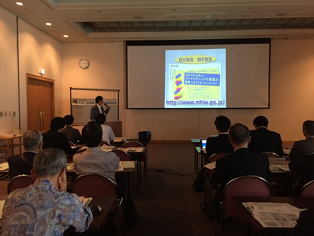 自分発見と相手発見のコミュニティ形成による人事コンサルティング事業
＜内容＞
2015年12月から身体の健康診断のみならずストレスチェック、つまり「心の 健康診断」が企業に義務付けられる。ISD個性心理学は各方面でのエビデンスや使用実績もあり、目に見えない「人の本音」を分類したり、相性を計ったりすることができる。営業や社内環境整備、またプラーベートの人間関係構築のツールのひとつとして提案する。
●一般社団法人学校教育開発研究所（広島） 代表：栗原慎二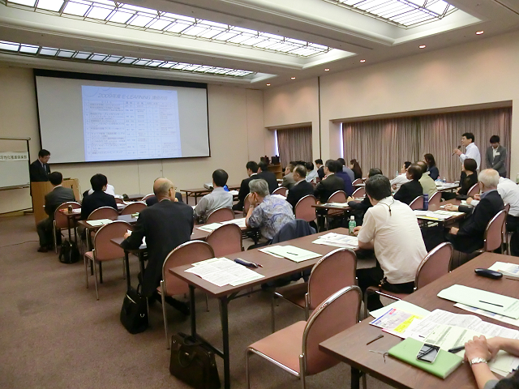 学校教員の研修により、日本の子どもたちを元気にす
＜内容＞
教育の目的は「社会形成者としてのスキル」「パーソナリティ」を持った「人格の完成」を目指すことであるが、これがまったくできていない現状がある。子どもたちをきちんと教育するためにはまず教員の質を高めることが必要なので、教育に関するプロフェッショナル集団をつくり、いままでの実績などをもとに教員研修・マネジメント事業を行う。
●オオアサ電子株式会社（山県郡北広島町） 代表取締役社長：長田克司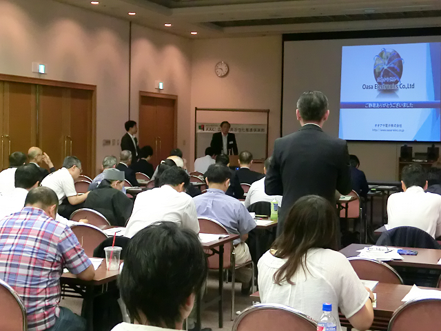 ハイレゾホームオーディオの製品開発とカーオーディオへの水平展開
＜内容＞
ハイレゾ音とは人間の耳では聞こえない周波数の音であるが、音質に影響するとして近年話題になっている。さらに、脳の活性化によるリラックス効果等もあるようで、現在広島大学と連携をしてエビデンスを取っている。「グローバルな田舎っぺ企業」としてこれからも様々な業界や企業と連携しながら社会に貢献していきたい。
●リンパ球バンク株式会社（東京） 代表取締役社長：藤井真則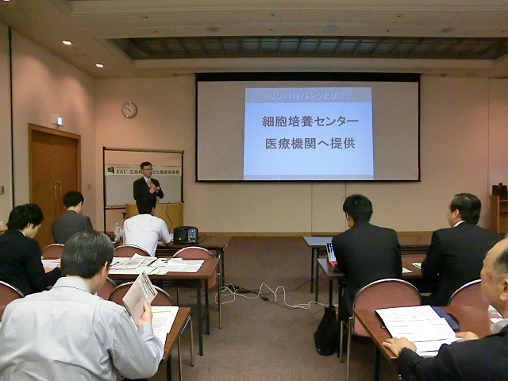 ANK自己リンパ球免疫療法によるがん治療
＜内容＞
世界で唯一、がん細胞を攻撃する免疫細胞であるNK細胞を活性化・増殖する培養技術を持っている。血液からNK細胞を含むリンパ球を採取し、血液培養センターにてNK細胞を培養させる。培養したNK細胞を週2回の点滴で体に戻していく。他人の血液でも可能であるが法律上不可能である。「延命ではなく進行がんを完治させる」を理念に掲げる。
第２６回起業家・投資家・専門家お見合い交流会（平成２７年２月２１日）
講演
『「地消・地産」のすすめ～農業の活性化と地域経済～』 講師 森信秀樹氏（森信建設株式会社 代表取締役社長）
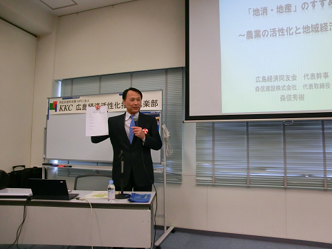＜内容＞
TPPについて考える中で、農業や地域活性の重要性を考えるようになった。日本の農業を見てみると、就農人口の減少・高齢化、とりわけ米作りは非常に所得が低く、米を主業として生活するのが困難だという現状がある。広島の場合、新潟などよりブランド力が劣る上、土地も狭いため、米作りは採算が合いにくい。広島での地消地産の実現に向けて、米よりも地域にある様々なブランドの野菜を安定供給できるようにしていくべきだ。広島県も積極的に政策をうっているので、消費者の意識改革が鍵となる。
発表企業
●株式会社まごやさい（安芸高田） 代表取締役 有政雄一
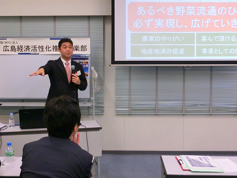 小規模農家集約型野菜流通事業
＜内容＞
安芸高田市にある25ヶ所の農家さんから野菜を集めて出荷している。複数の農家さんが集まることで、旬の野菜の多品種少量当日出荷が可能となり、個人経営の飲食店から高評価をいただいている。農業流通はまだまだこれからで、より明確な情報をお客様と農家の方々に提供できるようにしたい。
●株式会社ワールドルームブリス（福山） 代表取締役 井上敬治
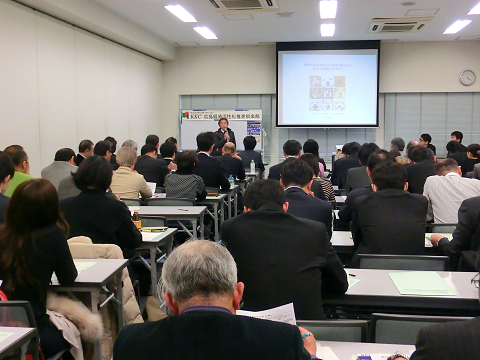 地熱･排熱･蓄熱等の自然エネルギーを活用した省エネ型全館空調システムの展開
＜内容＞
エアコン1個で家全体の空調を管理するシステム。勝手に換気が出来る仕組みで、欧米では一般家庭でも主流であり、家の中の部屋の温度差によるヒートショックや熱中症を予防する。エアコンのスイッチは常につけたままで、ランニングコストは年間10万円くらいである。FC展開をしていきたい。
●株式会社マイファーム（京都） 代表取締役：西辻一真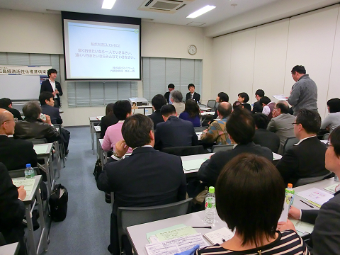 貸し農園・農業学校・八百屋・レストラン事業
＜内容＞
6年前にプレゼンをさせていただいたが、その時と変わらず、「耕作放棄地を全部使いたい」という夢を追っている。就農人口を増やすためには、所得のことよりも、楽しさや生きがいをアピールすべきである。販売店にて消費者を農業体験の旅行やツアーに誘導し、より多くの人に野菜作りをしていただきたい。
第２５回起業家・投資家・専門家お見合い交流会（平成２６年１０月１８日）
講演
『生まれ変わっても起業家になりたい理由』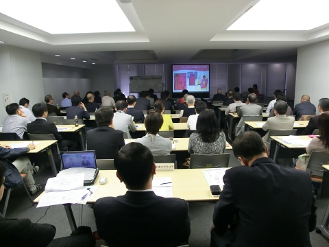 講師 多田多延子氏（株式会社ティーエスピー 代表取締役）
＜内容＞
幼少期、持病がきっかけでピンクの服を着ることが増える。ピンクは母親のおなかの中の色で色彩による治療法である。今では365日ピンクの服、ピンクの持ち物で揃え、ピンク社長と呼ばれるようになった。
3歳の時に、祖母を支える曾祖母の姿に感銘、自分も誰かを支えたいと思い、起業を決意。様々な人と関わる中で、世の中の役に立っている人が成功していると感じ、常に何かお役に立てることはないだろうかと考えるようになった。現在は復興都市・広島をスローガンに平和活動に力を入れている。もっと、広島、そして世界の役に立てるようになりたい。
目的地を先に決めることが大切であり、日々よくなるための変化を意識している。毎日とても幸せで充実している。
発表企業
●
広島プロバスケットボール株式会社（広島）代表取締役社長 中島健太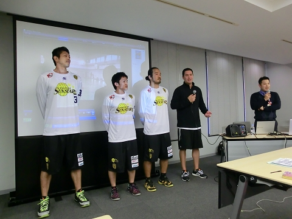
アカデミー事業を基盤としたプロバスケットボールチーム運営＜内容＞
プロバスケットボールリーグbjリーグはアメリカのプロスポーツのように地域に密着、地域に欠かせない存在となることを理想とする。チーム名は広島サン・スターズ。bjリーグに属するチームは各チーム独立採算制だが、７割が黒字運営である。世界に通用する人材を育成するための英会話教室、プロバスケットボール選手輩出のためのバスケットボール教室、この2つの事業を基盤とし、とにかく継続、アカデミーを大きくすると同時に、個人スポンサーを募集し、安定した運営を目指す。
ポータブル脳波計ミューズブレインシステムの事業化経緯
～「脳波を利用したストレス軽減システム」の事業化を図るも苦戦。ところが意外な市場でブレーク中～
＜内容＞
取り付けがとても簡単なアルファ波とベータ波の識別装置。国や県の補助金を活用し、7年かけて研究、精度は医用とほとんど同じになった。脳波を利用してリラックス度を測ることができる。これを利用して、以前、脳波を測定し、適する音楽をネットから引き出すアプリを開発、フィットネスクラブに営業したが、全敗。学術的ならばと大学に営業をかけるとこれが見事に当たる。現在クライアントの8割は大学である。失敗を糧にこれからも頑張っていきたい。
●株式会社エクスコア（東京） 代表取締役：畠山繁明、 営業企画部長：飯田大貴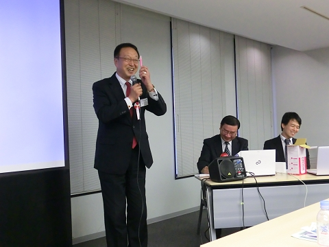
世界で勝負！！世界最高消火能力の投げる消火用具
＜内容＞
天井に火が回るまでの約2分間にすばやく消火できる消火用具。既存のものは使用するまでに時間がかかるが本商品はそのまま投げるだけである。同業他社5社に技術提供しているが、本商品の性能は他社の2倍である。不動産会社、不動産管理会社、警備会社等がメインクライアントである。販売ルートを増やすとともに、工場を大きくするために出資を募る
●隼エナジー株式会社（東京） 代表取締役：清水陽一郎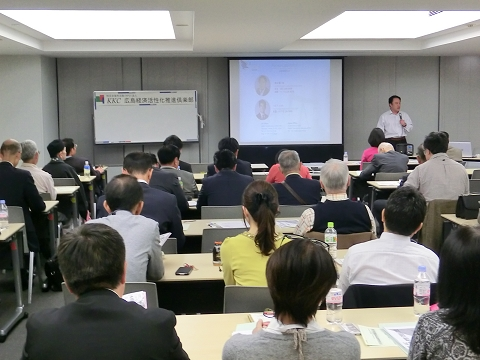
中小油田、ガス田開発を通した原油天然ガスの生産プロジェクト
＜内容＞
日本初のベンチャー石油会社である。アメリカは現在オイル＆ガスブームで、土地を買って井戸を作る、または、既存の井戸を買う、という方法で個人が原油天然ガスを生産・販売している。アメリカでは地下資源の所有権は個人にあり、売買は自由である。井戸の掘削後24年で投資額の回収が見込める。2020年にIPOを目指す。なかなか額は大きくなるが、一緒に冒険する仲間（投資家）を募集する。
第２４回起業家・投資家・専門家お見合い交流会（平成２６年６月２１日）
発表企業
●株式会社オンザリンクス（広島） 代表取締役 東聖也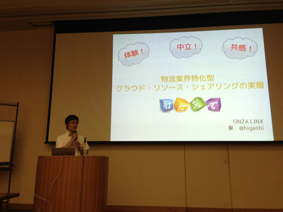
ソフトウェア開発・販売～中小企業様を対象とした倉庫在庫改善に特化した
システムコンサルティング、及びシステム開発～
＜内容＞
歴史の勉強をして、物流が社会の底辺を支えているとても重要な役割を果たしていると感じた。弊社は①ITソリューション事業②コンサルティング事業③コアソリューション事業の三本柱である。
すでにあるものに価値を加える、ちょっとした発見がゆくゆくは文化になる、この発想から考え出したのが『はこぶる』である。クラウド上で在庫管理、また事業者のニーズに応える商品・サービスを提供する。
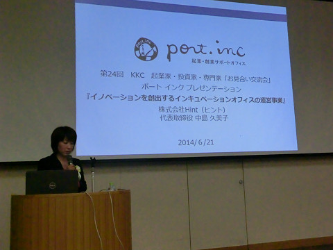
イノベーションを創出するインキュベーションオフィスの運営事業
＜内容＞
起業支援オフィス『port.inc』の運営。広島商工労働局の補助金により、6月16日にオープン。『port』は『港、拠点』、『inc』は『incubate（育てる）』『incident（出来事）』『incorporate（法人化する）』。
起業家支援の経験を積んだ4人の女性スタッフによるきめ細やかなサポート、また託児サービスなどのサービスも充実、そして圧倒的にお洒落な空間。利用は会員制、人脈を生かして人と人がつながる場所作りに努める。
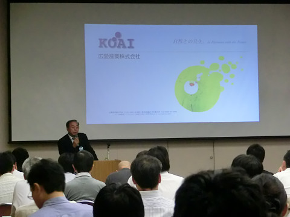
バイオでゴミをほぼ消滅～エコロジーステーションシステムの展開～
＜内容＞
今年で創業50周年を迎える。生ごみはもちろん、バイオの力でプラスチックも約1日で処理する。減容率は90％を超える。処理後は燃焼性が非常に強いので燃料として使えるとも考えている。
バイオについて何も知らなかったからこそ逆に果敢に挑戦できた。世界のゴミ問題の対策に貢献できればと思う。
Sound Solution Project
～既存技術では50cm以上の壁厚が必要な調音・遮音を、わずか2cmで
実現出来るパネルを製造~
＜内容＞
世界中の著名人から賞賛を得ているパネル。日本全国に代理営業店がある。
遮音・調音により、雑音をなくし、ほしい音だけが聞ける構造で、音楽関係、病院、大学、事務所、工場など幅広く利用していただいている。
資金調達により、性能・デザイン性の向上、また設備投資をして大量生産による価格の低下を目指す。
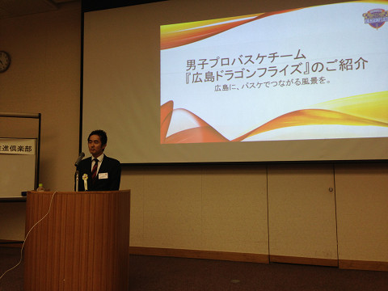
プロバスケットボールクラブの運営
＜内容＞
バスケットボールで人と人、地域をつなげる。バスケットボールは世界的にみると実はサッカーより競技人口が多い。『ドラゴンフライ』というのは、ミヤジマトンボに由来し、『勝つ』『跳ぶ』などの意味が込められている。
4月以降6人の選手入団によりメディアの取材が増えた。スポンサー（広告）やパートナー（地域貢献活動）になっていただき、広島の企業を盛り上げる後押しをし、一緒に広島を活性化させていきたい。
第２３回起業家・投資家・専門家お見合い交流会（平成２６年２月１５日）
講演
「11年連続『日本一の知恵工場』」
講師：松岡浩氏（株式会社タニサケ取締役会長）
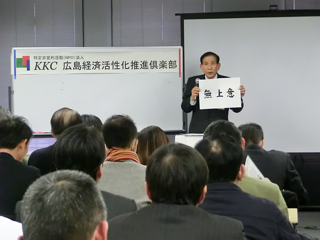
<内容＞
毎朝6時からトイレ掃除。これで会社がうまくいくから面白い。従業員は38人で売り上げは7億円、利益率22％以上の超優良企業である。改善無限・知恵無限、「日本一の知恵工場」を自任、社内に提案箱を設置し、社員の提案を会社に取り入れている。また「ありがとうカード」や「親孝行月間」など社内の雰囲気づくりに努めている。社員一人一人が知恵を出し、それが具現化していくことで、社員は自分で会社の歴史を創り、存在感を感じることができる。社員一人一人が嬉々として働くことができる。その時の「笑顔」はきらりと輝いて見える。
人生観は「利他公益」。他人を喜ばせ、縁を大切に、「人」儲けをする。10個のみかんを3人で分ける時に、2人に4つずつ、自分は2つ、に分けられるか、この心である。経営者は従業員より多くの報酬を得るわけだから、誰よりも損をしなければならない。これ以上ない、つまり「無上意」を実践し、相手のこと思いやり、その背中を見せ続けることが大切である。
発表企業
●
株式会社ジョブファクトリー（広島） 代表取締役 福田隆之
夢と希望の溢れた街にしよう ひろしま県人あめ事業計画
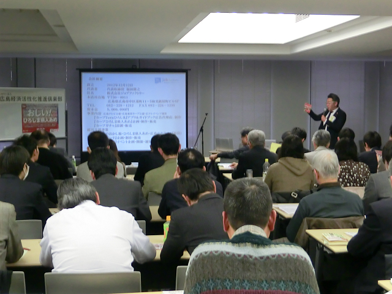
＜内容＞メイン事業は「カープtownひろしま」アプリ＆ガイドブック広告代理店である。カープ坊やの県人あめはカープ公認で大人気、80％近くの予約が入っている。販促ツールとして、広島から日本、世界へと県人あめを広めていきたい。そのために観光客に認知していただくことがとても重要で、現在300か所に設置していただいている。収益の一部は似顔絵師の方の印税収入になるので、似顔絵師の方の安定的な収入の確保にもつながる。
●
E-ラーニング総合研究所（広島） 代表 馬上清治
毎日コーヒー一杯分の価格で資格に挑戦！Eラーニングカフェ
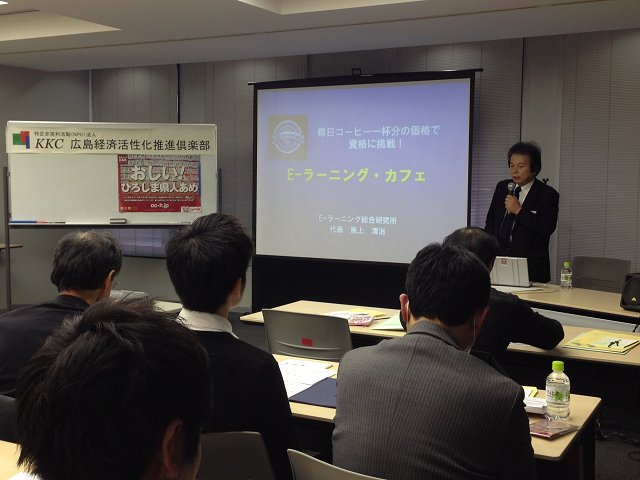
＜内容＞Eラーニングカフェのカフェは、カフェ感覚で、世界中いつでもどこでも勉強できる、という意味である。月額定額で、価格的には学校と独学の間にある市場である。格差社会から生まれる教育格差の是正につながると思う。ターゲットは基本的に個人で、あいた時間に自由にやりたいことを学べるシステムである。このシステムに賛同していただけるならぜひとも広めていただきたい。
●
ダブルスネットワーク株式会社（広島） 代表取締役 若本修治
H.S.P(ハウジング・サービス・プロバイダー)事業
～適正価格で資産価値を高める地域住宅供給のネットワーク～
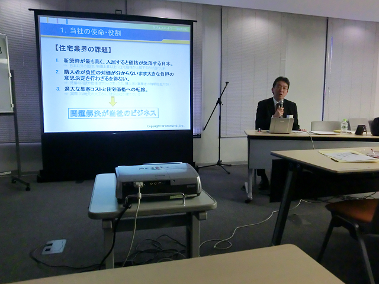
＜内容＞ 「住宅の取得で資産を失わない。」現在の日本の住宅は、(1)集客コストが価格に上乗せ、(2)適正価格が不明、(3)住むと資産価値が急落、という問題に直面していて、20年間で価値はほとんどなくなってしまう。大手ハウスメーカーが市場の半分を抑えているので、莫大なお金が県外に流出している。個性的な家が多いが、住むと価値が急落、街の景観も悪い。地元の会社で安く安全な住宅を購入することが、地域の活性化にもつながる。
第２２回起業家・投資家・専門家お見合い交流会（平成２５年10月１9日）
講演
「循環型社会INきなり村」
講師：川本義勝氏（株式会社カンサイ 取締役村長）
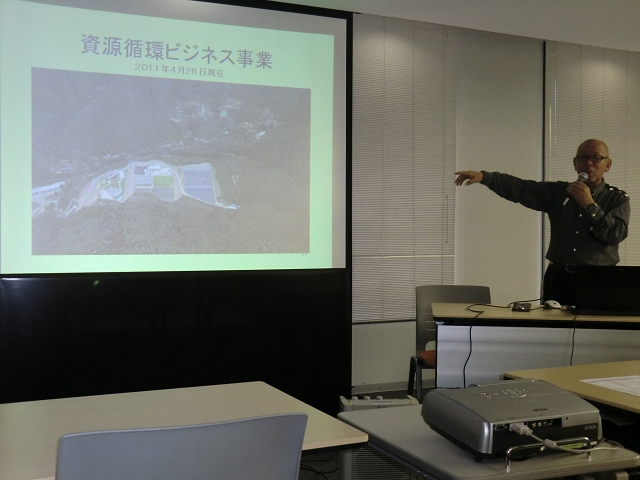
<内容＞
都市で発生する有機資源を積極的に回収し、バイオマスエネルギーとなる資源の研究・開発により作物の肥料として活用、自然の力と人の知恵だけで育てた安心安全の作物を社会へ還元する、循環型の農園施設「きなり村」を、広島県廿日市市に平成17年オープン。もともと廃棄処理をしていたので「廃棄物から資源循環へ」をキーワードとしてバイオマスによる持続可能（サスティナブル）な社会を目指している。第6次産業（一次産業＋二次産業＋三次産業）として、廃棄物の世界から農業へ進出した企業はないので国内外から視察に来られる。
事業概要は、「環境技術事業（廃棄物処理リサイクル）」「計量証明事業（廃棄物の混入分析）」「建設業（下水道管のジョイント接続）」「工業薬品販売（ロッド管理等）」「肥料製造販売」「研究開発事業（農業を研究しながら色々と開発～きなり鳥の開発）」「資源循環ビジネス事業（自己完結型農業）」「ASP情報事業（電子マニフェスト専用ソフト他）」である。都市と農村の融合を図り、衰退している農業に元気を与え、農業が進化発展していくことで、新たな農業モデルを確立し、社会に貢献していく。遊び心をもてば、広島はもっと活性化する。
発表企業
●
平原建設株式会社 環境素材事業部 代表取締役 平原秀則
環境に優しい段ボール箱「エコ・ロジ・パコ」
＜内容＞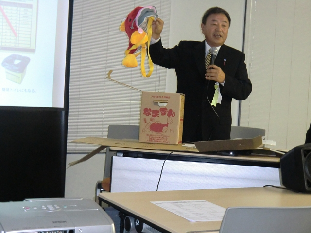建設業から新分野進出を図るにあたり、企業の社会的責任を果たすと同時に社員のモチベーション高揚に繋がる事業を目指し、持続可能な事業という経営理念に基づき、ステープル・粘着テープ等異素材を使用せず、一枚の段ボール板を折り込むことで組み立てられる段ボール箱「エコ・ロジ・パコ」を開発した。
解体時にガムテープなどが無いため箱が痛まないのでリユース可能であり、異素材を分別する作業も無く、たためばそのままリサイクルへ出せる。金属もないので錆が中身に影響を及ぼす恐れがない。また、強度に優れた二重構造で重いものが入れやすい。金額的には一般のダンボールと同じくらいである。
●ＧＮ１食品化学研究所 代表 佐々木博之
泡状食品「あわわふわわ」フランチャイズ事業
＜内容＞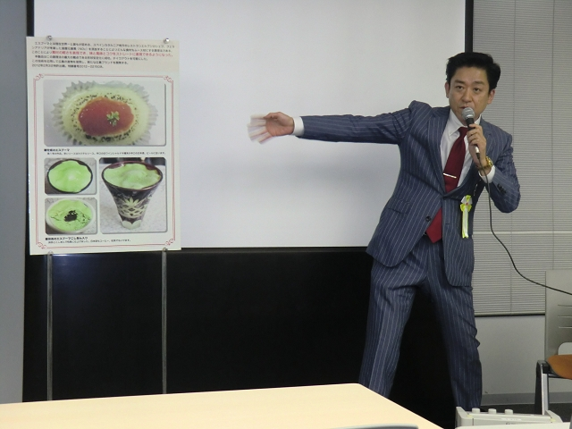これまで泡の形状は15分程度しか保つことが出来ず、流通は不可能であった。また、食感はぬるかったら不平が出て、氷を入れると液状になって泡にならない、など泡の形状を保つにはバランスが難しいとされてきた。そこで今回、新食感の「あわわふわわ」を開発・販売した。現在、特許を２件出願している。
泡状食品は、現在道の駅で販売しているが、介護食として注目を受けていて、広島大学と連携している。介護の現場では、誤嚥性肺炎に対する食事について泡状食品を組み入れていきたい。臨床試験が必要である。日本酒などのアルコールを含めても美味しくいただける。
●
株式会社エクストラネット・システムズ 代表取締役社長 山本隆義
検査装置の受託開発及び劣化診断サービス
＜内容＞ 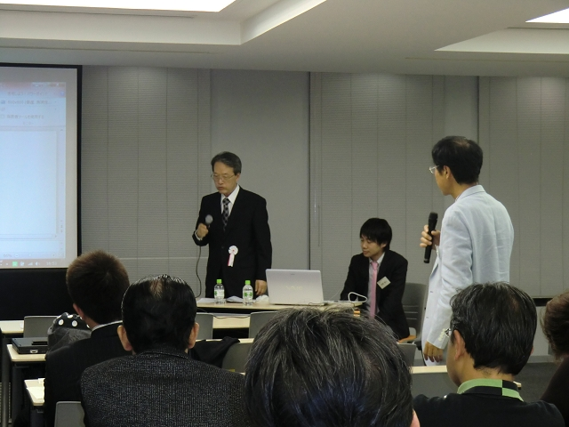回転機械を始めとした機械の劣化度を、設備の運転時に生じる音・振動・超音波など常に変動する膨大なデータの中から、有用な特徴を抽出して設備劣化診断をする技術であり、機械製品の誕生から廃棄までのライフサイクルにおける付加価値の向上をめざす。プロアクティブ保全方式により故障の原因を発見し、監視・保守・メンテナンスへのサポートを行う。
劣化診断の技術を活用できる分野として、石油化学精製、鉄鋼、ガス製造、電力、機械などがあげられる。オーバーホール費用低減、更新費の低減、軸受寿命の低減などの経済的効果が期待できる。
●
有限会社プロメンテ 代表取締役 小松広明
日本でプロメンテだけ！誰もできなかったダクトクリーニング
＜内容＞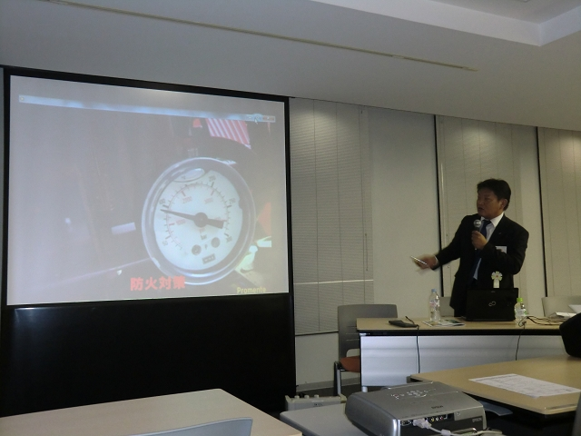空調ダクト、厨房ダクト、工場の排気ダクト等各種ダクトクリーニング事業を手がけている。全国でもあまり携わられていない業種である。中小企業では、生産性・採算重視の経営のため、保全やメンテナンスは軽視される傾向にある。ダクトクリーニングを行わなかった場合、製品不良率の増加、異物混入、火災の発生率増加、職場環境の悪化、近隣との関係悪化、などのリスクがあげられる。しかし、気づかない、危機感が薄い、メンテナンスの方法を知らない、清掃基準がない、保全予算を確保していない、清掃道具がない、などの理由で、保全メンテナンスは日本ではまだまだ根付いていない。
今後ベトナムのハノイへ事業展開する予定。
第２1回起業家・投資家・専門家お見合い交流会（平成２５年６月１５日）
発表企業
●
株式会社ENCOM（広島）代表取締役 浜崎誠治
『重度身体障害者用「意思伝達装置」の開発と販売』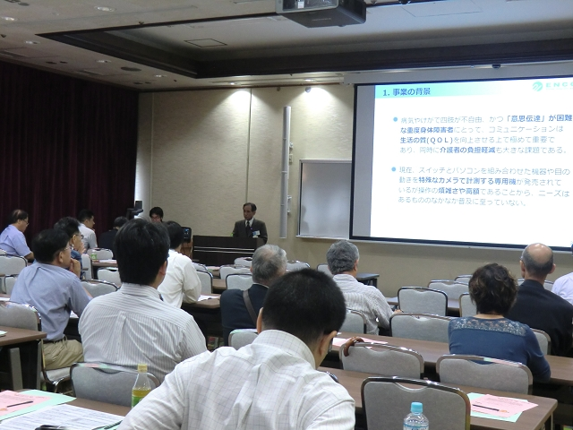
【内容】
「意思伝達」の困難な重度身体障害者にとってコミュニケーションは生活の質(QOL)を向上するためには極めて重要であり、介護者の負担軽減にもつながる。現在、重度身体障害使者(患者)は230万人いて、事故などで一時的に意思伝達が困難な患者やその状態にある人を加えると、マーケットとしては大きなものと思っている。
「意思伝達装置」は、「眼の動き」をタブレット内臓カメラで捉え、眼の動きで文字や定型句、シンボルを音声に変換して意思の伝達を図るものである。大手の新規介入する企業も増えてきているが、専用カメラと専用PCを構成した意思伝達システムは、100万円前後と大変コストの高いものとなっている。汎用機種を使用して低価格の意思伝達装置の開発を目指す。
平成23年広島市立大学と「視線入力システム」を共同開発着手し、広島市「技術開発助成金」をうけ、平成24年「広島ベンチャー育成基金」奨励賞を受賞した。これからも、先進技術と衆知を結集し、常にお客様のお役に立つ「縁の下の力持ち」として社会に貢献していく。
●
アロマール（広島）代表 答島優佳
『廃棄植物等から抽出した成分の有効活用』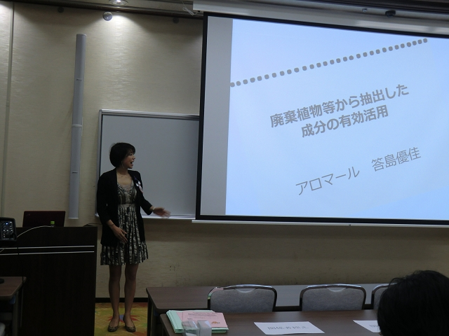
【内容】
植物が有している成分を破壊することなく抽出する「真空抽出技術」を活用して、間伐や剪定枝葉など現在廃棄されているものから抽出液を取出し、それを利用して商品化を進める。「真空抽出」の特徴は、酸化させず有効成分を取り出せ、腐りにくいことである。また、細胞液を効率的に抽出でき、抽出液が透明である。
廃棄植物を使う理由は、生産コストや廃棄コストがかからないことであり、廃棄物の商品化が図れると、エコロジーである。また、廃棄物に関しては余り研究されていないのも理由のひとつである。「ワサビの葉」「竹葉」等で上皮細胞の活性化やがん細胞の殺傷などの機能が確認されている。
市場規模は、健康・美容・食品市場は約1.7兆円、アロマ市場2600億円と広く、今後、濃度の違いによる効果・効能や他の植物、人に対する効果の研究が必要となってくるので、今回の交流会で、石鹸、スプレー等商品の販路開拓、OEM、研究資金、動物・人の臨床に進むためのパートナーを望む。
●
NPO法人陽だまり（東広島）代表理事 市川マヤ
『放課後こどもくらぶ』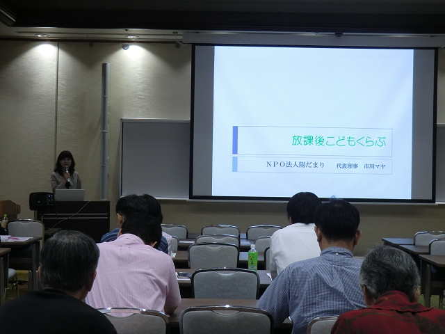
【内容】
東広島市西条地区は、人口が急増し小学校が3校しかなく1校あたり約1000名の学童がいる。しかしながら、児童館はなく、小学3年までが対象で、しかも保護者が17時まで不在に限ると厳しいものとなっている。
「子供を預けるところがない。」「子供の遊び場がない。」「子育ての悩みを気軽に相談できない。」などの親の要望を解消するため「放課後こどもくらぶ」を今年4月から始めた。現在、利用者は4名、スタッフ2名である。しかし、学童保育条件に添えない方はたくさんいらっしゃり、認知が増せば利用者は増える見込みである。
「放課後こどもくらぶ」の場所は、西条駅と、小学校2校、広島大学からも2km圏内に位置にし、放課後前の空いた時間帯は地域に貸出し、人と人との交流の生まれる場所にした。
大切にしたいことは、子供たちに「自己肯定感」を持ってもらうことで「ゆっくり話を聞く」「待つ(本人のやる気を尊重)」「小さなことでもほめる」に従事し,「子供は社会の宝、子育てを社会全体で！」を理念としていく。
●
NPO法人コミュニティリーダーひゅーるぽん（広島）理事長川口隆司
『しあわせProducts.』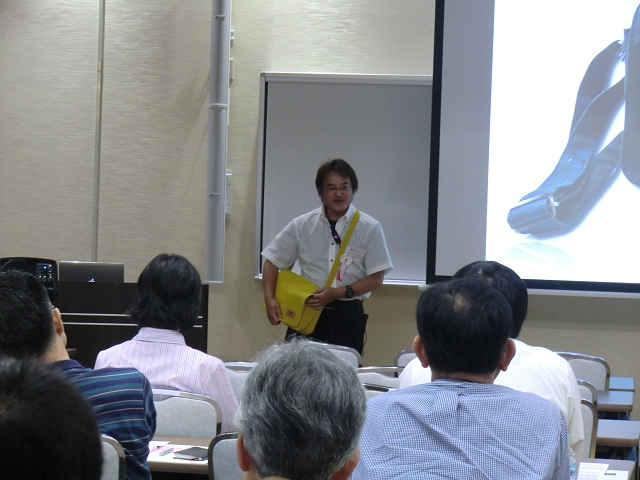
【内容】
「障がい者アート」は、従来、励みの対象といわれていたが、2001年広島で「アート・ルネッサンス」展を開催し、大胆な発想や独創性、目線の違い、意外性の富んだ作品で「おもしろい」「驚いた」「不思議だ」との感想があり、大盛況であった。以後、毎年「アート・ルネッサンス」展を開催している。これは、全国でも広島だけである。
「幸せProducts.」は、これらアートが生み出す「幸せ」をより具体的に社会や生活の中にとけ込ませてみようというもので、ランチョンマットやコーヒーカップ＆ソーサ、ストッキングを販売した。今年の新製品は、尾道帆布で裏地にアートを描いた「楽しさと幸せをまとうカバン」を販売する。
障がい者の自立には、アート作品が発表できる環境が必要であり、レンタル倉庫を借りて保管したり、可部のギャラリーで販売したりしている。今回事業設計づくり(起業支援)、新製品の開発費(資金支援)、場の提供(提携支援)を望む。
第２1回起業家・投資家・専門家お見合い交流会（平成２５年６月１５日）
発表企業
●
株式会社ENCOM（広島）代表取締役 浜崎誠治
『重度身体障害者用「意思伝達装置」の開発と販売』
【内容】
「意思伝達」の困難な重度身体障害者にとってコミュニケーションは生活の質(QOL)を向上するためには極めて重要であり、介護者の負担軽減にもつながる。現在、重度身体障害使者(患者)は230万人いて、事故などで一時的に意思伝達が困難な患者やその状態にある人を加えると、マーケットとしては大きなものと思っている。
「意思伝達装置」は、「眼の動き」をタブレット内臓カメラで捉え、眼の動きで文字や定型句、シンボルを音声に変換して意思の伝達を図るものである。大手の新規介入する企業も増えてきているが、専用カメラと専用PCを構成した意思伝達システムは、100万円前後と大変コストの高いものとなっている。汎用機種を使用して低価格の意思伝達装置の開発を目指す。
平成23年広島市立大学と「視線入力システム」を共同開発着手し、広島市「技術開発助成金」をうけ、平成24年「広島ベンチャー育成基金」奨励賞を受賞した。これからも、先進技術と衆知を結集し、常にお客様のお役に立つ「縁の下の力持ち」として社会に貢献していく。
●
アロマール（広島）代表 答島優佳
『廃棄植物等から抽出した成分の有効活用』
【内容】
植物が有している成分を破壊することなく抽出する「真空抽出技術」を活用して、間伐や剪定枝葉など現在廃棄されているものから抽出液を取出し、それを利用して商品化を進める。「真空抽出」の特徴は、酸化させず有効成分を取り出せ、腐りにくいことである。また、細胞液を効率的に抽出でき、抽出液が透明である。
廃棄植物を使う理由は、生産コストや廃棄コストがかからないことであり、廃棄物の商品化が図れると、エコロジーである。また、廃棄物に関しては余り研究されていないのも理由のひとつである。「ワサビの葉」「竹葉」等で上皮細胞の活性化やがん細胞の殺傷などの機能が確認されている。
市場規模は、健康・美容・食品市場は約1.7兆円、アロマ市場2600億円と広く、今後、濃度の違いによる効果・効能や他の植物、人に対する効果の研究が必要となってくるので、今回の交流会で、石鹸、スプレー等商品の販路開拓、OEM、研究資金、動物・人の臨床に進むためのパートナーを望む。
●
NPO法人陽だまり（東広島）代表理事 市川マヤ
『放課後こどもくらぶ』
【内容】
東広島市西条地区は、人口が急増し小学校が3校しかなく1校あたり約1000名の学童がいる。しかしながら、児童館はなく、小学3年までが対象で、しかも保護者が17時まで不在に限ると厳しいものとなっている。
「子供を預けるところがない。」「子供の遊び場がない。」「子育ての悩みを気軽に相談できない。」などの親の要望を解消するため「放課後こどもくらぶ」を今年4月から始めた。現在、利用者は4名、スタッフ2名である。しかし、学童保育条件に添えない方はたくさんいらっしゃり、認知が増せば利用者は増える見込みである。
「放課後こどもくらぶ」の場所は、西条駅と、小学校2校、広島大学からも2km圏内に位置にし、放課後前の空いた時間帯は地域に貸出し、人と人との交流の生まれる場所にした。
大切にしたいことは、子供たちに「自己肯定感」を持ってもらうことで「ゆっくり話を聞く」「待つ(本人のやる気を尊重)」「小さなことでもほめる」に従事し,「子供は社会の宝、子育てを社会全体で！」を理念としていく。
●
NPO法人コミュニティリーダーひゅーるぽん（広島）理事長川口隆司
『しあわせProducts.』
【内容】
「障がい者アート」は、従来、励みの対象といわれていたが、2001年広島で「アート・ルネッサンス」展を開催し、大胆な発想や独創性、目線の違い、意外性の富んだ作品で「おもしろい」「驚いた」「不思議だ」との感想があり、大盛況であった。以後、毎年「アート・ルネッサンス」展を開催している。これは、全国でも広島だけである。
「幸せProducts.」は、これらアートが生み出す「幸せ」をより具体的に社会や生活の中にとけ込ませてみようというもので、ランチョンマットやコーヒーカップ＆ソーサ、ストッキングを販売した。今年の新製品は、尾道帆布で裏地にアートを描いた「楽しさと幸せをまとうカバン」を販売する。
障がい者の自立には、アート作品が発表できる環境が必要であり、レンタル倉庫を借りて保管したり、可部のギャラリーで販売したりしている。今回事業設計づくり(起業支援)、新製品の開発費(資金支援)、場の提供(提携支援)を望む。
第２０回起業家・投資家・専門家お見合い交流会（平成２５年２月１５日）
講演
『急成長する中古衣料品業界について』
講師：岡本昭史氏（株式会社Don Don up 代表取締役社長）
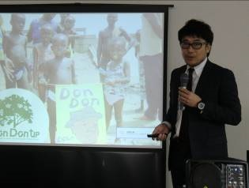
<内容＞
高校卒業して，バイクレーサーを目指して渡米したとき，古着を輸入して輸出するNPOに影響を受けて古着関係のビジネスを始めた。当初，ビンテージ古着ショップを多店舗展開していたが，2005年「毎週水曜日値段がドンドンダウン」する販売手法や「ドンな服でもドンドン買取」するシステムでリサイクル古着屋「ドンドンダウンオンウェンズデイ」をオープン。現在６１店舗を展開している。「毎週水曜日に値段がドンドンダウン」は，業界初の仕組みで，毎週値下がりすることで商品の回転が速く，待つか決めて買うかのスリルが味わえる。また，お客様の中で買い物がスケジュール化し，購買目的で来るので衝動買いをしてもらえやすい仕組みとなっている。
古着が売れる理由として，ブルーオーシャンの市場であり，デフレ社会・格差社会にマッチしている，古着への抵抗感の減少，震災後のトレンド，などが挙げられ，今後も市場の拡大が見込まれる。また，ロゴとネーミングが一致しているため，メディアに取り上げやすい，日常会話に出てきやすい。
「古本ではブックオフ，古着ではドンドンアップ」を目指し，店舗展開のスピードを図るためフランチャイズ展開，株式上場を目指す。
発表企業
●
株式会社クラウンワークス 代表取締役 横山文雄
ポケット剪定 ～「とりあえず切って欲しい」そんな要望に応える剪定サービス～
＜内容＞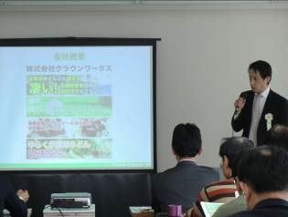「庭師に頼むほどではないが，伸びた木を切って欲しい」とのニーズがあり，剪定業界が「価格が不明確」「高価格少商品数」「窓口が不明確」が背景となっている。
ポケット剪定は，価格を体系化することで市場拡大を目指している。
1本3,000円で採算は取れるのかと質問されるが，電話で受け実際に現場へ行くと，大概は5～7ｍのものがほとんどであり，加えてついでに他の木の剪定を頼まれるケースが多い。
受付の窓口の拡大，代理店制度の導入，広告宣伝活動，ポケット剪定の認知度向上，が今後のポイントとなる。将来の構想としては，商品開発と宣伝活動に力を入れ，ポケット剪定⇒花壇⇒ガーデニング⇒緑化市街地などターゲットを広げていきたい。
●
株式会社土居技研 専務取締役 土居裕一
スラリーアイス製氷機器の製造・販売
＜内容＞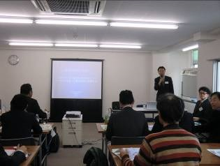スラリーアイスは，秋に北海道からサンマを空輸する際に詰めるなど，身近に使われている。高知県の株式会社泉井鉄工所とタイアップして，2011年からスラリーアイス製氷機の製作を行っている。スラリー製氷機は，製氷機と貯水タンクの間を循環させて製氷するシステムになっている。
スラリーアイスの特徴として，シャーベット状で商品にマッチできるため「高鮮度保持化」が図れる。－1℃で牡蠣をつけるとグリコーゲン含有量が増し「熟成効果」が図れる。冷凍のカツオを解凍する「冷凍食品の解凍」効果がある。発泡スチロールに商品とスラリーアイスを半分ずつ入れると効果がある。
今後の事業展開としては，一般の飲食店や寿司屋などがターゲットで，まず中国地区から直販をメインとして，順次全国へ展開を図りたい。
●
インフォバイオ株式会社 代表取締役 飴谷章夫
研究者および一般向け、ゲノム・遺伝子の大規模解
＜内容＞ 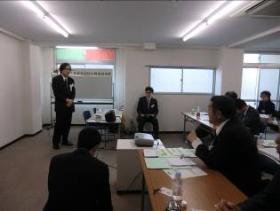医療品，食品，農業分野などの研究開発にとって必要不可欠な次世代DNAシーケンス解析の受託サービスであり，主に大学，研究機関，一部企業や病院関係者から受託がある。
ゲノム・遺伝子解析の活用例としては，病気に強いが味の悪い養殖魚と病気に弱いが味の良い養殖魚があったら，解析して美味しい病気に強い養殖魚にするDNA構造を検討できる。
この技術を利用すれば，疾病のなりやすさが予測できるようになる。疾病は，遺伝的要因と環境的要因があり，この割合によって病気が違ってくるからである。
大学や研究機関などからの個別受託解析，大規模解析をターゲットとする。
●
株式会社アーダン 代表取締役 西博人
国内最高水準のシルク高配合エイジングケア化粧品の奄美発グローバル展開
＜内容＞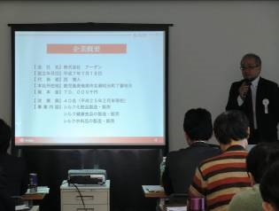商品のコンセプトは，「シルク基礎材料とする」「天然素材を使う」「界面活性剤を使用しない」ことであり，絹を探求してシルクに包まれた暮らしの提案を行う。
取扱商品は，「初絹シリーズ」「純絹シリーズ」「シルクフィブロシリーズ」を主に展開を図る。お客様に，サンプルで使用してもらうと90％以上の方から「これからも使用したい」との声をいただいている。
化粧品市場は，年齢が高くなるほど化粧品を購入する額があがる。高齢化社会に伴い，スキンケア化粧品はこの8年間で19％増と成長市場である。
今後，新規開発と自社広告通販，海外市場展開の販売網拡大を図りたい。
第１９回起業家・投資家・専門家お見合い交流会（平成２４年１０月２０日）
講演
『～DBJ女性新ビジネスコンペティション受賞者に聴く～「起業から得た，成功ノウハウ」』
講師：牛来千鶴氏（株式会社ソアラサービス 代表取締役社長）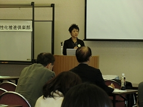
<内容＞
ソアラサービスは「広島に“あったらいいな”をカタチに」をテーマに、「共同オフィス」「モノづくり」「人育て」を提供することで，現在，資本金３１００万円，社員数１０名，５８事業者１０５名で運営しています。企業理念は変わるものではありません。ターゲットとコンセプトが必要で，「ひろしまＳＯＨＯクラブ」では，「３６歳前後の男女の企業家（ターゲット）」「ここに来れば元気になれる（コンセプト）」です。私も仲間も「夢があるから頑張れる！！」のです。
起業から得たものは「強さ」と「感謝」です。「強さ」は，「心を開く強さ」「人に頼る強さ」「責任をとる強さ」「開き直る強さ」「前を進む強さ」がキーワードです。「感謝」は「関わった全ての人に感謝」「全ての経験に感謝」です。
今後，広島の力で海外に協力できるプロジェクトを考えたいと思っています。
発表企業
●株式会社お宙（広島） 代表取締役 清水早苗
『ほんもろこ養殖事業に係る空き家再生と地域活性プロジェクト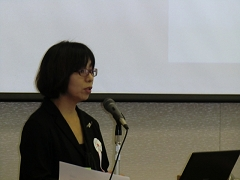
‐送迎付き田舎ＣＡＦＥおそらゆき＆ほんもろこＦＡＣＴＯＲＹ‐』
<内容＞
広島県は，全国一の高齢化率が影響し，耕作地の四分の一が耕作放棄地となっています。耕作放棄地を有効活用し高齢者が収入をえられるスキームとして２０１０年１０月２８日に着手しました。本年２月で湯来町，佐伯町，三次市で養殖しています。５月に「田舎ＣＡＦＥおそらゆき」をオープンしました。
「耕作放棄地の有効活用」「稲作に比べ池・魚の維持管理が楽」「１０アール当たりの生産性が稲作より高い」など利点があります。「ほんもろこ」養殖と販売を通じて，「田舎暮らしの安定収入」と「地域活用活性化」を目指しています。そのためには「安定生産」「安定供給」「トレーサビリティ」が課題であり，養殖ノウハウ，販路開拓のサポート，送迎付き加工所が必要と考えています。
●株式会社ニューズアンドコミュニケーションズ（広島） 取締役 高崎忠晃
『モニター＆ショピングサイト「モニカツ」による販売促進の提言』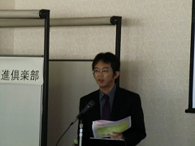
<内容＞
中小企業の円滑な販路展開のために，これまでの広告代理業，企画・製作の経験を通して，ネットユーザ同士が情報を共有するショッピングサイト「モニカツ」を誕生させました。「モニカツ」の提供サービスは「モニター運営」「ショッピング運営」「ウェブページ政策」となります。
「モニカツ」を媒体として「企業」から提供された商品を「モニカツ会員」がモニターして評価したものを「一般ユーザー」が購入してその販売マージンを企業に還元（成功報酬）するというビジネスモデルです。モニター記事（ブログ，ツイッター，フェイスブックなど）を載せることで口コミと同様，商品の信用性が増します。
これを通して，熊野筆など広島の商品を全国に発信していきたいです。
●株式会社コーポレーションパールスター（広島） 専務取締役 新宅光男
『高齢者の転倒事故対策としての靴下の開発』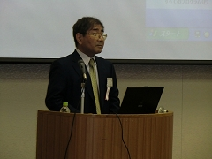
<内容＞
３２年前オンリーワンの企業をめざし一般靴下製造から健康靴下製造専用へ転換し，転倒予防靴下を広島大学と共同開発しました。外反母趾伸展や足関節背屈機能低下による転倒は年間１５万人にも及びます。
片足麻痺の患者さんや地元の後期高齢者２０名に転倒防止靴下を履いていただき調査を行いましたところ，立位姿勢が改善されるなど，格段の効果が認められました。１年後モニターしていただいた患者さんの半数以上が現在も使用してもらっていて，リピート率が高く，全員転倒事故は起こしていません。
現在，医師や看護師から相談を受けたベット周りの転倒事故対策に取り組んでいます。
第１8回起業家・投資家・専門家お見合い交流会（平成２4年６月１6日）
発表企業
●
有限会社スリーブラケッツ CEO：河田俊嗣
自然な歯の再生事業 ‐ティースバンク／ティースクリーナー／医療現場の美人顔ソフト‐
＜内容＞歯の矯正等で抜いた歯を，歯周組織を保存したまま長期冷凍保存(CAS:CellAlive System)して，将来自分の歯を移植することで，拒絶反応を起こさずに再生できます。これを，ティースバンクとして保管管理します。
歯ブラシのブラッシングは，表面をキズつけていまいそこに細菌等がたまり汚れの原因ともなります。歯の表面の細かい凹凸に入り込んだ汚れを落とし自然な白い歯になるよう界面活性剤フリーの歯ブラシ等歯面清掃器具を開発します。
顔の印象は，主に目元，口元が大きくかかわっています。医療現場の美人顔ソフトを使用して客観的に良い顔か悪い顔かの判別を行い，治療により良い顔にできるかの把握に活用します。
●VivodO（ビーボデュ） 代表：松木耀子
普段着～外出着用にデザインした介護用衣類の製造販売
＜内容＞介護を受けている体の不自由な方の洋服は，機能面を優先した地味で外出するには利用しにくい物が多いので，機能性・ファッション性を高めた洋服を提案します。
自分の介護経験をふまえて今回提案する介護用衣類には，「無理に上下を分離しない（ワンピースで可能）」「かぶらない」「立ち上がりは1回でできるようにする」「トイレ座位時，人から前面が見えないようにする」というこだわりがあります。
3年後，車椅子利用者のウエディングドレスを販売することを考えています。
本交流会を通して，縫製所，販売ルートを開拓したいです。
●
NPO法人キャリアプロジェクト広島 代表理事：有田耕一郎
広島の学生と地元企業をつなぐ、キャリアプロジェクト広島の活動について
＜内容＞就職活動支援のCDA（キャリアカウンセラー）保有者が中心となって社会人と学生の交流の場を提供，および若年者のためのキャリア形成・就職に関する支援をおこないます。 延べ年間500人が参加しました。
地元中小企業の人事採用に関しての課題は，「中小企業の採用や広報の手法」「学生が中小企業に目を向けない」などの要因があります。学生が中小企業を志望しない理由として，「知らない」「教育研修の整備がない」「寂しい（大企業では同期入社が多いが，中小企業では1名の場合もある）」などが挙げられ，これらを解決するため，カジュアル説明会の実施，トライアル雇用の提案，合同研修の実施など，学生と地元中小企業のマッチングをおこないます。
●
株式会社広島バイオメディカル 代表取締役社長：豊浦雅義
ニワトリバイオテクノロジーを活用した抗体医薬の創生
＜内容＞広島大学で取得した特許「ニワトリ型モノクローナル抗体製作技術」を用いて新規抗体医薬開発事業をビジネスモデルとして，ライセンス収入をめざす。
抗体医薬は，対象となる細胞だけにしか効用がなく，健全な細胞にまでに影響を及ぼさないため世界的に注目を集めています。実際，抗体医薬の世界市場は，2007年に約2兆8900億円，2013年5兆3900億円と急速に拡大しています。
広島バイオメディカルの理念は，「ニワトリの優れた特性を活かして人々の健康に貢献する。」です。
本交流会で，資本施策の立案ができる方，および海外ビジネス展開が図れる人材，または紹介していただける方を希望します。第68回中国文化賞，第16回ひろしまベンチャー大賞を受賞しました。
第１７回起業家・投資家・専門家お見合い交流会（平成２４年２月１８日）
講演
『ジョブズに学ぶ、セレンディップな生き方／デメリットの裏にあるメリットの見つけ方』
講師：長谷川嘉秀氏（有限会社広島ネット・マガジン取締役編集長）
<内容＞
セレンディピィティ（serendipity）とは，失敗や偶然の出来事から，幸福を掴むことです。スティーブ・ジョブズは，「ハングリーであれ！」「フー リッシュであれ！」と言っています。ジョブズ自身，人生において様々な失 敗や苦難を乗り越えた上で，成功を手にしました。
＜所感＞
脳を活性化し，「セレンディピティ脳」になる・することによって，いろいろなアイデアが湧き，自分が果たすべき役割が見えてきて，そういった方々がこの街により多く誕生・育成されることによって，この街はますます活性化していくのではないでしょうか。
発表企業
●
株式会社セイルボート 代表取締役：西野量
老賃貸業者間流通システム事業 ～物件流通インフラ創出事業～
＜内容＞
賃貸業者間の物件流通インフラを作ることにより，効率を格段に高めます。従来クライアントへ物件の情報を配信していたものを，「キマＲｏｏｍ！」は，クライアントが情報を求めて集まる”場”の提供を目指します。今後の事業展開としては，業者間の「つながり」を強化しＢｔｏＢ賃貸版ＳＮＳを目指します。
＜所感＞
本事業が軌道に乗った場合，大手の介入が考えられる。この場合，先行企業としていかにクライアントに対して，サービスの充実を図るのかが鍵となると思いました。業界初のシステムであれば，ビジネス特許取得して，追従する同業者に対して防衛することも考慮すべきと思います。「キマＲｏｏｍ！」がメインとなるため，クライアント名簿流出防止とか，データベースのバックアップなどシステムトラブルに対する対策が必要となると思います。
●ロングヒル・インダストリー 代表取締役：岡田耕祐
消臭効果の高いウサル（ベチバー）配合のゼリーの開発と販売
＜内容＞ 香水やアロマオイルのベースとなっている消臭効果の高いベチバーという植物から抽出した成分により，消臭力の高い消臭液やゼリーを開発しました。ベチバーのアンモニアに対する消臭効果は，ヤシガラ活性炭や備長炭に比べて1.2～1.4倍で消臭効果や持続力が高いです。自社所有の特許技術をもって消臭液の透明化が可能となり，衣類・布類への噴霧が可能となりました。介護施設やペット，カラオケルーム，自動車室内などの消臭に対しても，大きなマーケットとして期待できます。
＜所感＞
ベチバーの消臭効果（消臭範囲と効果持続時間）がどのくらいあるのかがわかりませんが，可能性を秘めたものであると感じました。生産地域が東南アジアだけということで，安定供給ができるのか疑問が残りました。また，消臭効果がアンモニアで説明されましたが，他にも色々な臭いに対してどのような効果があるのか示してもらいたかったです。自社特許がある強みを展開できるかが今後の鍵となると思います。
●
一般社団法人百人邑 理事：大島政光
「ビジネスラウンジ」事業計画
＜内容＞ 広島駅から至近距離に「ビジネスラウンジ（１９０㎡オープンスペース）」を開設します。受付秘書代行，情報収集，事務代行などの代行業務を行います。支店，営業所などの代わりとして安価に提供できます。今後の展開として，ノウハウの構築，人材育成，２店舗を目指します。
＜所感＞
立地環境からしてビジネスラウンジは利便性のあるものであると思いますが，営業時間が限定されているので，さまざまな業種に対しては適応できないと思います。秘書代行が，クライアントとの会議の調整や資料の準備，チケット等の用意，食事等の予約などまでできるとなると有用なものになると思います。ラウンジスペースの利用率を上げる方策や専用の駐車場の必要性も否めません。
●
株式会社デジコム 代表取締役：甲斐健
ヒラタケドームハウス栽培システムの確立と販売事業の展開
＜内容＞ ヒラタケを効果的に栽培できるヒラタケドームハウス（１３坪7700mm×5000mm×4000mm）栽培システムを販売します。ヒラタケは，「キノコの王様」と称されていますが，人工栽培技術が未熟で量産化できず，シメジなどの量産化になり姿を消していきました。そこで，ドームハウスを利用してヒラタケ菌床とヒラタケ栽培システム販売事業を展開します。東広島市で実際にドームハウスを採用していただいております。
＜所感＞
ドームハウスによるヒラタケ栽培が12毛作が実現できるなら，安定供給が可能となると思われます。今後，ヒラタケを使った料理，レシピなどをいかに広報していくかにかかっているのでは。また，ドームハウスは，農業栽培だけでなく災害などに対しての仮設建物や家畜小屋など，多方面に対して活用が見込まれます。今回のプレゼンでは，山間地での活用を提案されていましたが，ビルの屋上などにドームハウスを設置してヒラタケを栽培することも有用だと思いました。
第１６回起業家・投資家・専門家お見合い交流会（平成２３年１０月１５日）
発表企業
●
一般社団法人人生安心サポートセンターきらり 理事長：橋口貴志
老後の問題（後見人，保証人，資産活用，尊厳死，葬儀）解決のためのトータルマネジメント
＜内容＞ 後見人制度ではカバーしきれない連帯保証人の引受け及び身元引受，日常生活支援，資産の有効活用，死後の事務などを法律家，医療機関，介護サービス事業者などが連携してサポートしていきます。
＜所感＞
立ち上げから間がないということもあり，当面は広島市を中心としたサポート体制であるとのこと，山間地や島諸部などでも利用できるように体制を強化していただければと思いました。
高齢化社会の進展やまだ競合他社が西日本にないことを考えると，ニーズは大きいはずで，それに対応するサービス体制の確立が急務と感じました。
●
株式会社ライフアンドマネークリニック 代表取締役副社長：波多間純子氏
家計簿診断＆家計簿ソフト「家計簿せんせいR」
＜内容＞ 家計簿サイトに登録し，ネット上で家計簿に記帳すると，家計簿診断など家計見直しのためのツールを活用して教育やマイホーム資金など計画的に貯蓄しながら家計をコントロールできるように誘導します。ファイナンシャルプランナーとしてのノウハウをソフトに反映しており，単なる記録の蓄積でなく家計のコーチング，未来のための貯蓄・安心のサポートを行います。
企業は，家計簿利用者のデータベースを利用して地域性が把握できるため， マーケティングや販促活動に利用できます。
＜所感＞
「家計簿せんせい」のデータは，ＦＰ歴２０年以上３，５００件超の個人相談実績をもとに作成されているそうで，個人相談で得た情報をどの程度までソフトに転用できるかは，慎重に判断する必要があると思います。地域別での拡販診断するにはまだデータ数が少ないため，マーケティング分析するにはデータ量を増やす必要があると感じました。
●
冒険総合体験・オリハルコン 代表：山下健一
太平洋一周ヨット経験を活かした『冒険総合体験』
＜内容＞ 瀬戸内海の利用は，夏を過ぎると風景を眺めるか釣りしかありませんでしたが，瀬戸内海の風を利用して，瀬戸内のよさを伝えるためヨットによる無人島自然体験や癒しクルーズなどを提供します。
また，ロッククライマーの経験を活かし，三倉岳のロッククライミングや沢登りを提供します。
太平洋一周したヨット，オリハルコンのセールなどに企業広告をする。
＜所感＞
拠点が玖波港と地域的なハンディがあるように思えました。また，怪我や事故への対応に関して具体的な体制が確立できていないため，一抹の不安を感じます。天候の影響やそれに代替するプログラムや平日に集客する仕組み立てが必要と思いました。
クルージングでしか味わえない瀬戸内海の美は，まだ事業として確立されていないので，オリハルコンだけでなく地域との連携で事業を確立していくのも一考と思います。
●株式会社イー・エル・テクノ 代表取締役社長：豆野和延
有機ＥＬ照明モジュールの製造・販売
＜内容＞ ＬＥＤ照明は，指向性が強すぎて照明にしては照度が高く目にはよくありません。
有機ＥＬ照明は，薄型形状のガラス面に半導体を使って面により照明を行うため自然光に近いものです。将来はフイルムを使用することにより，照明面を曲げることもシースルーにすることも可能となります。
デメリットとしては，消費電力が蛍光灯やＬＥＤ照明の倍の消費電力であることで，現在，九州大学と研究開発を行いデメリット解消に努め，将来ＬＥＤ照明より消費電力も低くできるよう研究しています。
＜所感＞
有機ＥＬ照明が自然光に近いとのことであり，できれば実物を見てみたかったところ。使用費電力が，蛍光灯の２倍もあり，一方で，寿命が同じであるので，販売価格を低価格にするか，用途等でメリットを打ち出さないと，市場拡大しにくいのではないかと思います。
蛍光灯を有機ＥＬ照明に替えるとなると，屋内配線の安定器をはずす必要があるのもネック。
ただ，このような問題を解決した先に，新しいサービスや価値が生まれるのも事実で，今後の展開を期待します。
●
有限会社ダイナマックス 代表取締役社長 尾川雅一
グラスファイバー製，戦国武将の甲冑の販売及びレンタル事業
＜内容＞ これまで甲冑は，20～30キロと重たく，価格も４０万円と高価なもので，素材も鉄，アルミ，木材など加工が難しいものでした。素材をＦＲＰ（グラスファイバー）とすることで，7キロと軽量化が図れ，価格も半額以下となり，子供用の甲冑も実現できるようになりました。甲冑は，日本文化を象徴するコンテンツで，縁起がよく，外国からのイメージもよいといった特徴があります。また，ゲームやドラマなどで戦国時代が注目されているものの，実際に目にするものがないため，イベントや広告など多方面に用途があります。
現在，キャラクター甲冑を俳優柿辰丸がズームズームスタジアムで「カープ侍」として登場したり，サッカー日本代表ゲームに「蒼侍（ブルーサムライ）」として登場し注目を浴びています。
＜所感＞
プレゼン中に後方から「カープ侍」が登場、インパクトがありました。イベントや拡販などには大変効果のあるものと思います。個人で持つとなると，価格や収納スペース，保管などの問題があるので，プレゼンでもあったように，レンタルが有用と思います。オリジナルの甲冑は特注販売で，戦国時代の甲冑は量を用意し，イベントや映画，ドラマなどにレンタルで貸し出すなど，複数の仕組みが必要と思いました。
甲冑をダンボールで運搬していましたが，コンパクトに持ち運べるバックや刀，槍などアクセサリーも充実してほしいところです。
第１５回起業家・投資家・専門家お見合い交流会（平成２３年６月１８日）
平成１３年６月に創立したKKCは、１０周年を迎えました。これまで主催したイベント３６回、講演者数５３名、紹介したベンチャー企業７４社を数えます。ＫＫＣのイベントを契機とした出資総額は１億円を超えました。
創立１０周年記念 広島ジュニアマリンバアンサンブル演奏
1991年結成された子供たちによるマリンバ打楽器アンサンブル。「ヒロシマ国際平和文化活動推進団体」として認定を受け、世界各国でで演奏。一人一人が生き生きと表情豊かに全身で音楽を表現する演奏が世界で称賛される。
当交流会では、中学生３名、小学生８名が、オープニングイベントとしてジャンバラヤ，ＵＦＯ，八木節，熊蜂の飛行など数曲を演奏した。
過去の発表企業による経過報告
●
株式会社ソアラサービス（広島） 代表取締役社長：牛来千鶴
第3回交流会発表 『創発集積地ＳＯ＠Ｒ（ソアラ）発進計画』
第7回交流会発表 『～新しい会社のカタチ～ソアラ・コンソーシアムのモデル発表』
＜内容＞
プレゼン当時３名であったスタッフも１３名に増えた。
広島のビジネスポートとしてＫＫＣに相談して現在４８社９２人の入居数となった。
主な事業として
・ 拠点作り。
・ モノづくり・・・・当初コーディネイト事業を主としていたが，地元企業とコラボして商品開発を行っている。
竹スミ入りの黒モミジ，唐辛子入りの赤モミジ，モーツアルトのｊｅｗｅｌ，広島菜のキムチなど。
・ 人材育成・・・・専門職マイスターチャレンジプロジェクト。
●
株式会社TTJ（広島） 代表取締役：長谷川和博
第5回交流会発表 『ゴールデンシルク（糸・生地）の製造販売およびそれらを利用した
最終製品の企画・製造・販売』
＜内容＞
２００４年綿布輸入事業から始めたが，同じものが調達できないとか納期に間に合わないとかトラブル続きであった。
テレビでシルクが美容にいいことを知って熊野町へ行きシルクのブラシ製作を依頼した。
通販生活に紹介され，１万本販売できた。今後，化粧品の製造販売を年内に考えている。
ＫＫＣでプレゼンすると、翌年に波が来ている。
●
株式会社ハウス１１９（福岡） 代表取締役：古澤秀和
第6回交流会発表 『高度「安心・安全・健康」木造住宅の施工・販売＆リフォーム事業』
第13回交流会発表『厚さ２cmの素材で遮音、サウンド・ソリューション事業』
＜内容＞
テレビなどに紹介されて，３４代理店に広がった。
売り上げの７割が関東であるためこの大震災で痛手を食った。
アメリカで１００％現地法人会社「ＧＡＴ」を立ち上げた。
近日中にリチャードカーペンター，Ｘジャパンのヨシキへプレゼンする予定です。
●
株式会社光コム（東京） 代表取締役社長：福沢博志
第13回交流会発表 『光コム（“光の櫛”）を使った長距離・高精度・高速の
ニュータイプ三次元測定器の製造販売』
＜内容＞
２００２年東京工業大学初のベンチャーとして発足した。
当初，通信関係や大学から受注を受けていたが，２００８年方針を変えて医療事業，計測システムを主軸として展開することにした。
新型多点振動計を新技術開発助成にて開発中である。
医療事業は１３００ｎｍＯＣＴ（光断層画像）装置のデモを使用してマーケティングをしている。
●
株式会社三宅（広島） 代表取締役社長：三宅正光
第14回交流会発表 『顔認証ソフト搭載のセキュリティーシステム』
＜内容＞
９４年目の老舗企業である。
６０年間，針事業をしていたが，１００％輸出に頼っていたため中国などの進出で針事業から撤退せざるを得なかった。
３０年前より印刷事業へ転換して，その後ＩＣタグ事業へも進出した。
ｉＧａｔｅは，主力商品でカメラ付き万引き防止ゲート。
創立１０周年特別記念講演 「なぜ今ドラッカーが求められるのか」 岩崎夏海氏（『もしドラ』著者）
講演者の岩崎氏は、1968年7月生まれ。東京芸術大学建築科卒業後、作詞家の秋元康氏に師事。 アイドルグループAKB48のプロデュースなどにも携わる。2009年12月、著書『もし高校野球の女子マネージャーがドラッカーの
「マネジメント」を読んだら』（略称「もしドラ」）が、219万部、電子書籍12万部突破。 【 2011年2月現在】
当交流会では、顧客の視点（相手の立場に立つこと）の重要性を具体例を示して解説、『もしドラ』が売れた理由や、今後の社会についての忌憚ない意見などを語った。
第１４回起業家・投資家・専門家お見合い交流会（平成２３年２月１９日）
発表企業
●
株式会社ＯＫＵ（広島市） 代表取締役：奥野真利
リトアニア直送，天然素材の子供服
古くからヨーロッパで汎用されている天然繊維リネンを使用して，子供アパレル事業およびオリジナルスキンケアの開発販売を展開する。ＬＯＨＡＳ志向のコンシューマがターゲット。市場規模は３０兆円。リネンは，通気性，熱伝導性が優れており，リラクゼーション，非アレルギー性の肌トラブル，アトピー性皮膚炎に効果がある。消費者目線から企画，開発し，リネンの体験会を展開している。主な商品は，スキンケア手袋，ナイトスキンケア靴下，フェイスパフ。
１００％の天然素材にこだわるか，コストも考慮するかで，顧客のターゲットが違ってくる。欧米と日本では，気候や人種による肌質などが違っているので，そのままの製法で行うと日本人にフィットするか疑問に思った。数多くのデータ取りも必要と思われる。
●
アクスプライム株式会社（広島市） 代表：岡村謙一
ｉＰａｄを利用して食品売場で献立を消費者に提供
料理レシピ，献立を栄養バランスとあわせ検索できるスマートフォン専用のアプリケーション「レシカ」をスーパーマーケットなどへ展開。店舗にｉＰａｄを設置して，買物客はレシカにより栄養バランスの考えられたレシピを検索し印刷する。店舗では，消費者に”便利”を提供し話題づくりにもなる。特売品など日々の広告に対しての付加価値がつく。なじみのない食材などにも販売展開が見込める。タブレット型端末は２０１０年５０万台のシェアであるが，５年後には１３００万台になると予想され，これから広く展開が図れる。
ｉＰａｄを利用したレシピと栄養バランスの提供では，若い主婦がターゲットとなると思われるが，シニア層に対しても，何か付加価値を持たせたサービスをすればも可能性が広まると思う。成人病などカロリー制限が必要な家庭や病院，学校給食などをターゲットにしてもいいのではないかと感じた。
●
株式会社三宅（広島市） 代表取締役：三宅正光
顔認証ソフト掲載のセキュリティシステム
全国小売業の万引被害総額は，年間１５万件，４，６１５億円。防止対策として，従業員による声かけや防犯カメラ，万引防止ゲートなどがあるが，現行で万引き見つけてもクレームされるケースが多い。万引犯は，自分の存在が知られると犯行におよばない傾向があり，声掛けが最も効果がある。本システムでは，万引防止ゲート内蔵カメラがゲートを通過した人物のデータベースを構築する。万引犯は何度も店に訪れるから，入店すると本システムから店内従業員へ警告と登録人物が通知される。また，お得意様が来店してもわかるため，拡販ツールとしても活用できる。
会場から内部の不正に対する対策が必要と指摘が出たが，今後の課題と思われる。
●
株式会社インダスト（熊本県） 代表取締役：中川勝也
ジャワ島でウナギの養殖
５年前介護食の製造・販売を始めたが，高齢者からウナギを食べたいが中国産は安全性が問題であり，国産は価格が高い声を聞いてウナギ市場に手ごたえがありと感じた。インドネシアはウナギの起源なので，ウナギの養殖に最適であると考えた。日本で食されているウナギはジャポニカ種であるが，現地での養殖ウナギはジャポニカ種に近いアンキラ・ビカラー種とした。世界のウナギのうち８１％が日本で消費されているが，近年，日本食が世界から注目されシェアが減っている。海外でのウナギの用途は主に干物としている。インドネシアは，ウナギの餌になるシラスが豊富にある半面，地域や住民の対応や地震，津波などの自然災害，政変などを考慮する必要はある。ウナギの蒲焼加工工場は，平成２３年４月からの稼働を予定しており，４年後に１８００万トン出荷を目指している。
日本食が世界から注目を浴び，マグロなどは中国が買付けられ高値となっている。ウナギも需要が増えるものと思われる。ジャワ産ウナギは，手ごろな値段で供給できると思うが，まだ国内では認知されていない。今後，安全性と安定供給が鍵になると考えられる。
第１３回起業家・投資家・専門家お見合い交流会（平成２２年１０月１６日）
発表企業
●
株式会社Clownworks（尾道市） 代表取締役：横山文雄
店舗経営者の為の『顧客管理×メールマーケティング』代行サービス
企業・お店の顧客情報を預かり，集客・販売を代行して行うサービスで，企業・お店ごとのマーケティングやシナリオを描き，そのシナリオに沿って顧客管理とメールマーケティングを代行します。
集客にあたっては，電話やチラシ，ＤＭなどが主ですが，メール配信で顧客の反応率が上がっている効果は納得しました。各クライアントの顧客情報でメール配信をするので，個人情報の管理徹底について分かりやすく説明することが，さらに信用につながるものと思います。
●
株式会社光コム（東京都） 代表取締役社長：福沢博志
光コム”光の櫛”を使った長距離・高精度・高速のニュータイプ三次元測定器の製造販売
光コムモジュール・光コム発生器を使用した測定器およびＯＣＴ（光断層画像診断装置）により時間，周波数，距離など高速・高精度の計測が可能となります。半導体の厚さ，車のドアの厚さなどの全数検査やＯＣＴは眼科が中心となっています。ＯＣＴは，今後，循環器系（心臓）に活用できます。
２枚のミラーを対向させて配置したファフリベロー共振器の中に光をあてて，周波数分析をすることで高精度の距離が測定できる発想に驚かされました。この技術を使える分野の開拓が必要と感じました。
●
株式会社ペダル（東京都） 代表：平尾博
新しい交通システム”InterStreet”～街にスマートな移動を提供する。
バイクシェアリングシステムをＩＴ技術を駆使して無人管理によるセルフ型レンタサイクルシステムを展開し，クルマから自転車へゼロエミッション交通体系を目指しています。藤沢市と湘南工科大学と産官学連携で社会実験後，９月からサービスを開始しました。外出を促す仕掛けをすれば，金を使用することで地域活性の一助になり，自転車社会となると心臓疾患の患者減少にもなります。
広島でも，西広島や横川などで，バイクシェアリングの社会実験をしていると思いますが，市内に駐輪場がないため路上駐車も出ています。広島では，観光や通勤通学などで用途は十分あると思いますが，環境整備が優先だと感じました。
しまなみ街道などは，自転車による横断を観光資源として県をあげて推進していますが，こういったところにＩＴを使った自転車（例えは，ＧＰＳ付やＩＣカードによる通行料，船賃などの自動精算）を使用する方法もあると思います。
●
株式会社ハウス１１９（福岡市） 代表：古澤秀和
厚さ２ｃｍの素材で遮音，サウンドソリューション事業
元家具職人で、８年前医療住宅で起業し，「子供の環境」を意識しています。音は人間の感情と直結していますが，社会生活していると，様々な騒音問題が発生し，エコキュートなど低音の騒音については特に問題となっています。
消費者は，既存製品に対して「コストが高い」「低音域の遮音ができない」などの不満を持っており，遮音に対しては，音響，音楽，オフィス，工場，機械，アナウンスブース，公共施設，個人宅など多方面に市場があります。吸音関連は，157億円の市場ですが，５年後に１％のシェアを目指したいとのことです。
ルームクリエータの実例として，タップダンススタジオ，ナレーションスタジオ，パチンコ，遊戯具の開発室，工場の遮音（近所に対する騒音対策），機会の遮音，幼児教育，銀行などの商談コーナー，英会話教室などを手がけており，現在，吸音するカーテンを開発中です。
会場にルームクリエータ「調音くん」（吸音仕切板）を展示され実体験をしましたが，吸音効果の大きさに驚きました。制振・遮音床下地材「ドラ息子」が展示されず，効果を実体験できなかったのが残念です。コストも高価ではなく，市場の拡大は大きなものとなりそうです。
第１２回起業家・投資家・専門家お見合い交流会（平成２２年６月１９日）
発表企業
●
有限会社桐原産業（山口県） 代表取締役 桐原慎治
『自動ヴァイオリン属演奏装置「オートマティック・ヴァイオリン」』
バイオリンは、駒が振動することによって、内部が共鳴して音が鳴り、その仕組みは人間の声帯に近いものです。このバイオリンの仕組みに着目し、過去の音楽データを振動に変換し、振動をバイオリンの駒に伝えることで、その音色を再現する装置を製作しました。ＣＤ等では無視される周波数の音も、バイオリンが修正して美しい音色を奏でます。
＜質疑＞
Ｑ：バイオリンのチューニングについてはどうしているのか？
Ａ：駒台で振動させ、バイオリン本体を共鳴させて音を出している。その音で、弦が共振してしまうので、弦は共振しないように止めている。
Ｑ：ＣＤからの音を振動させて、それを復元していることか？
Ａ：ＣＤは、２００ｋＨｚ以上の周波数はフィルタリングしているため、その音がバイオリン本体から音が出ることになる。レコードであれば、フィルタリングしていないためバイオリン本体に近い音が出る。
＜感想＞
この装置を使えば、既に鬼籍に入った名演奏家の演奏も、バイオリンの名器を使ってナマの音として再現できます。
●
有限会社こねっとはこにわ（広島市） 取締役社長 高橋信也
『地域特産品の自然の味を楽しむ、つぶし煎餅販売店「つぶし屋」』
食品を圧迫・加熱して、「つぶす」装置を開発し、この装置で作り出す食品の販売等を企画しています。ある程度水分の少ないものであれば、そのままつぶすことができ、魚介類（干したもの）だけでなく、野菜などもつぶすことができます。つぶした商品は柔らかく食べやすくなり、小麦粉などのつなぎや添加物は不要です。つぶした商品の特徴として、食中毒を防止し、唾液で旨みが増すほか、今までクズであった材料でも使用することができます。
＜質疑＞
Ｑ：「つぶす」装置は特許を取得しているのか？
Ａ：現在、特許申請中である。
Ｑ：魚介類のせんべいとの違いは？
Ａ：”えびせん”などは、つなぎに小麦粉を使用しているが、これは魚介類を直接加圧して押しつぶしている点において、製造方法が違っている。
Ｑ：味付けについてはどうしているのか？野菜や果物について展開がはかれるのか？
Ａ：味付けは可能であるが、ナマの味で作っている。野菜は、乾かしている。主に、根菜類が中心である。果物は、水分が多くつぶす時に水分とともに甘み成分も飛び散り製品にならない。
Ｑ：事業計画について、人件費などはどう考えているか？
Ａ：作業所などに委託して、極力コストを抑えていきたい。
Ｑ：生産性について、量産体制は確立できるのか？
Ａ：ビデオでは、魚一匹づつの押しつぶしであったが、数匹を一度に行うなど量産については、現在検討している。１回当たりの押しつぶしは、４～５秒である。
Ｑ：消費期限や賞味期限はどのくらいか？
Ａ：立ち上げたばかりで、具体的な検証はできていない。
Ｑ：販売価格は、どのくらいを想定しているのか？
Ａ：ホタルイカ６枚を一袋にして、送料込みで1,500円を考えている。
Ｑ：販売価格は、高すぎると思う。市場をもっと調査すべき。
Ａ：アドバイスを願いたい。
会場で試食しながら、皆さんから活発な意見が出てきました。原料の調達、価格設定、生産コスト、賞味期限等まだまだ課題がありそうですが、おもしろい装置でした。
●
株式会社ルクシオンサイエンス（埼玉県） 代表取締役 藤田栄一
『光波長変換技術（特許）による柔らかな光のLED照明「エコダイヤ-II」』
ＬＥＤ蛍光灯の製造販売を進めています。ＬＥＤ蛍光灯は、通常の蛍光灯と比較して高価ですが、長寿命、低電力であるため、最短で４年程度で償却できます。現在の蛍光灯は、安定器からの発熱で周囲温度を上げていますが、ＬＥＤ蛍光灯は、低発熱のため周囲温度の上昇を抑えています。また、水銀やアルゴンガスを使用していないため環境に優しくなっています。高天井施設や店舗などでの電球の取替となると足場を組むとか手間と労力がかかりますが、ＬＥＤは、高寿命なためその必要はありません。虫が好む紫外線も発生しないため虫が寄り付きません。
＜質疑＞
Ｑ：量販店ではＬＥＤ蛍光灯は販売されいないのか？
Ａ：現在、量販店ではＬＥＤ電球しか取り扱っていない。蛍光灯は、配線の中に安定器が設置されているが、ＬＥＤ蛍光灯は必要がないため安定器を取り除かないといけない。安定器の取外しは、電気工事士に限られている。
＜感想＞
既に成熟した感のある灯りの分野での挑戦には、さまざまな障害がありそうですが、淡々、耽々と事業を発展させようとする姿勢が印象的でした。
●
株式会社ＴＴＪ（広島市） 代表取締役 長谷川和博
『肌の古い角質を優しくからめとる「黄金シルクのブラシ」』
２回目の発表になります。前回はゴールデンシルクの展開についての発表でしたが、今回は、そのゴールデンシルクと熊野筆のコラボレーションにより生まれた「魔法のブラシ」についての発表です。お湯に濡らし、なぞるだけで肌の不要な角質や汚れを除去できるとあって、既に、今年に入ってブレイクし、「通販生活」でも好調な売上げを維持しています。このゴールデンシルクは、タイの生産農家を支援しつつ生産されており、極めて希少なものです。
＜質疑＞
Ｑ：販売価格はいくらか？
Ａ：ブラシで6,300円です。
Ｑ：耐用年数は？
Ａ：約１年です。ブラシの黄色から白色になるのが目安。
Ｑ：ブラシを押しあててブラッシングするとあるが、毛先で行うと不都合があるのか？
Ａ：毛先をカットしているため、やや肌触りが悪くなる。押しあてるほうが、シルクが広くあたるため効果がでやすい。 Ｑ：男性が使用してもいいのか？
Ａ：男女関係はない。ニキビ対策に使われている方もおられる。
＜感想＞
現在、開発中の商品も含めて、今後の展開も魅力的なものでした。
第１１回起業家・投資家・専門家お見合い交流会（平成２２年２月１３日）
基調講演
●「栄光と挫折－そして再挑戦へ。挑み続ける中でみえてきたもの」
●講師：小林 敬 氏（小林事務所代表）
1991年、小林事務所設立。1998年、居酒屋ＦＣ事業開始。2005年、倒産。小林事務所はＭ＆Ａを経て存続。
－税金をできるだけ納めないようにする間は、まだ自分の欲望が勝っている。－
正直に売上げや経費を計上し、正直に税金を納めることが、結果としてその企業の信用につながり、困ったときに周囲が助けてくれる。
－仕組みづくり－
その企業の身の丈にあった就業規則、給与規程などを整備すべきである。 これが結果として、恣意的な経営を排除し、やる気のある人間をステージに上げることができる。
－聞く人が身を乗り出すような事業計画をつくらなければならない－
そのためには、緻密なデータは不可欠である。
終始、「正直であれ」「現場主義」「数字が全て」「人材を大切に」という言葉がありました。「マネーの虎」出演時と同じく、鋭く熱い方でした。
発表企業
●
有限会社S-Produce（広島市） 代表取締役CEO
下宮勇生
『全国の郵便局のネットワークを活用した不動産・住宅情報事業～ふるさと住宅情報ＰＯＳＵＭＯ（ポスモ）～ 』
郵便局のネットワークを利用して、田舎への移住、別荘を持ちたい方をターゲットに無料の住宅情報「POSUMO」を提供します。 【2005年創業、2006年設立、資本金3,000千円】
●
有限会社ハル・ライトワーク（広島市） 代表取締役 重川隆一
『あらゆる光環境のご提案から設計・施工まで。光によって生まれる快感と感動をお届けします。』
「太陽と風のイルミネーション」プロジェクトについて発表していただきました。 昼でもきれいに輝くイルミネーション、日常のふとした気づきを発展させた発表でした。 【2003年設立、資本金3,000千円】
●
イーモービル株式会社（東京都） 顧問 祐原國文
『地球にやさしい電動バイクの開発・販売』
電化住宅や電気自動車など、生活で電気を使用するシーンが増加する傾向にあります。同社は、このような社会情勢を踏まえて、電動バイクの生産販売に取り組んでいます。現在は、東日本を中心に展開しており、まだ西日本にはほとんど展開できていません。
【2003年創業、2009年設立、資本金45,000千円】
第１０回起業家・投資家・専門家お見合い交流会（平成２１年１０月１０日）
基調講演
「学生がゼロから始めた起業、１０年生き抜く極意」
講師：益田 智史 氏（株式会社ちゃネット代表取締役）
発表企業
・株式会社クレオフーガ（岡山市）
・ＮＡＶＥＲ（周南市）
・Ｋｅｃ’ｓ ｓｔｕｄｉｏ（広島市）
・有限会社Ｋ２Ｒ
第９回起業家・投資家・専門家お見合い交流会（平成２１年６月６日）
発表企業
・シーオーテック株式会社（広島市）
・有限会社フィールドフロンティア（広島市）
・アグリ・ヴァンティアン株式会社（東京都）
・ケンビック・ヘルスケア株式会社（東京都）
第８回起業家・投資家・専門家お見合い交流会（平成２１年２月２８日）
基調講演
「社長業とライフスタイル」
講師：民秋 史也 氏（株式会社モルテン代表取締役）
発表企業
・株式会社セラーリオ（広島県世羅郡）
・ビジネスベースひろしま（広島市）
・株式会社ヘイプ（盛岡市）
・株式会社ツーセル（広島市）
第７回起業家・投資家・専門家お見合い交流会（平成２０年１１月８日）
基調講演
「ＣＯz-2２削減を目指して～エコロジーステーションシステムの展開～」
講師：野村 徳光 氏（広愛産業株式会社代表取締役）
発表企業
・株式会社マイファーム（京都市）
・株式会社エクストラネット・システムズ（広島市）
・有限会社Ｍａｒｉ（神戸市）
・有限会社ＳＯＨＯ総研（広島市）
第６回起業家・投資家・専門家お見合い交流会（平成２０年６月７日）
発表企業
・株式会社ハウス１１９（福岡市）
・株式会社ウイング（広島市）
・ＴＯＭＯ技研（福山市）
第５回起業家・投資家・専門家お見合い交流会（平成２０年２月２日）
基調講演
「宇宙で経済活性化」
講師：青木 豊彦 氏（株式会社アオキ代表取締役）
発表企業
・株式会社ＴＴＪ（広島市）
・日本ケミカル工業株式会社（愛媛県）
・英公社株式会社（愛媛県）
・ネイチャーテクノロジー株式会社（北海道）
第４回起業家・投資家・専門家お見合い交流会（平成１９年１０月２７日）
基調講演
「定年後の投資の楽しみ方」
講師：田野 好彦 氏（株式会社アイボック代表取締役）
発表企業
・株式会社３Ｄイメージ研究所（福岡市）
・ポインテージ株式会社（東京都）
・有限会社デジタルメディック（京都府）
・株式会社パワフルブレーンズ（東京都）
第３回起業家・投資家・専門家お見合い交流会（平成１９年６月２３日）
発表企業
・有限会社ＳＯＨＯ総研（広島市）
・株式会社ディープジャパン（福岡市）
・有限会社タオパブリケーションズ（広島県）
・株式会社Ｇｕｓｉｎｅｓｓ（ギジネス）（東京都）
第２回起業家・投資家・専門家お見合い交流会（平成１９年３月２４日）
基調講演
「インスマートの起業戦略と成長戦略」
講師：奥原 誠次郎 氏（インスマート株式会社代表取締役）
発表企業
・株式会社未来（山口県）
・株式会社Ｎｅｗ Ｏｒｄｅｒ（京都府）
・株式会社ヘルシーワークス（東京都）
・株式会社ネクストビジョン（広島市）
第１回起業家・投資家・専門家お見合い交流会（平成１８年１１月１８日）
基調講演
「投資家の視点から見た起業家へのメッセージ」
講師：井浦 幸雄 氏（中間法人日本エンジェルズ・フォーラム代表理事）
発表企業
・株式会社アイ・ブイ・スクウェア（東京都）
・株式会社アイサイト（大阪府）
・株式会社ビーディーエム（広島市）
・有限会社技研（広島市）